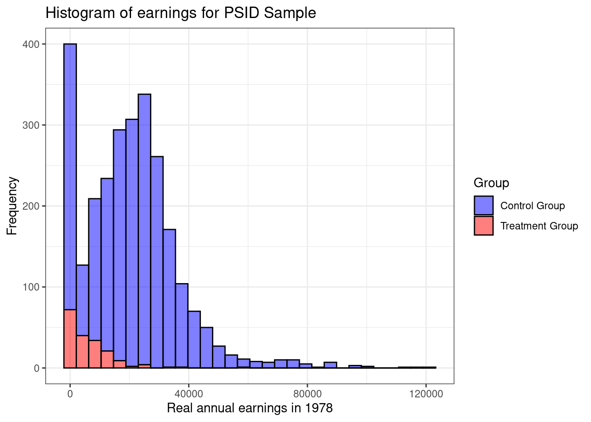
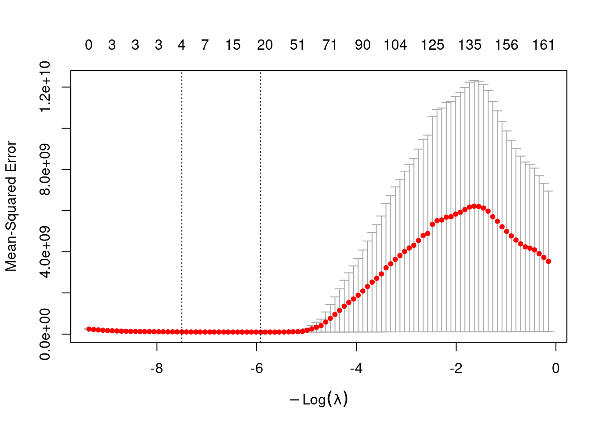
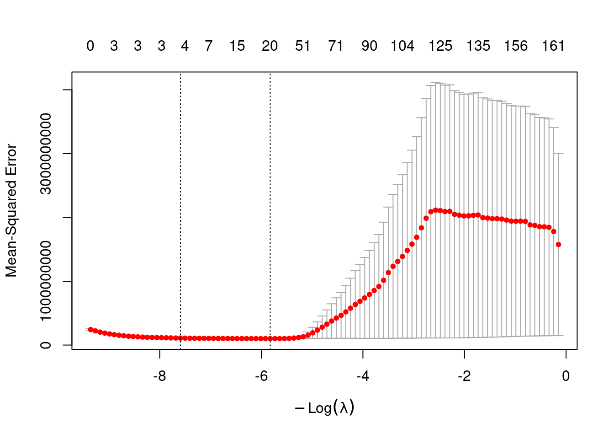
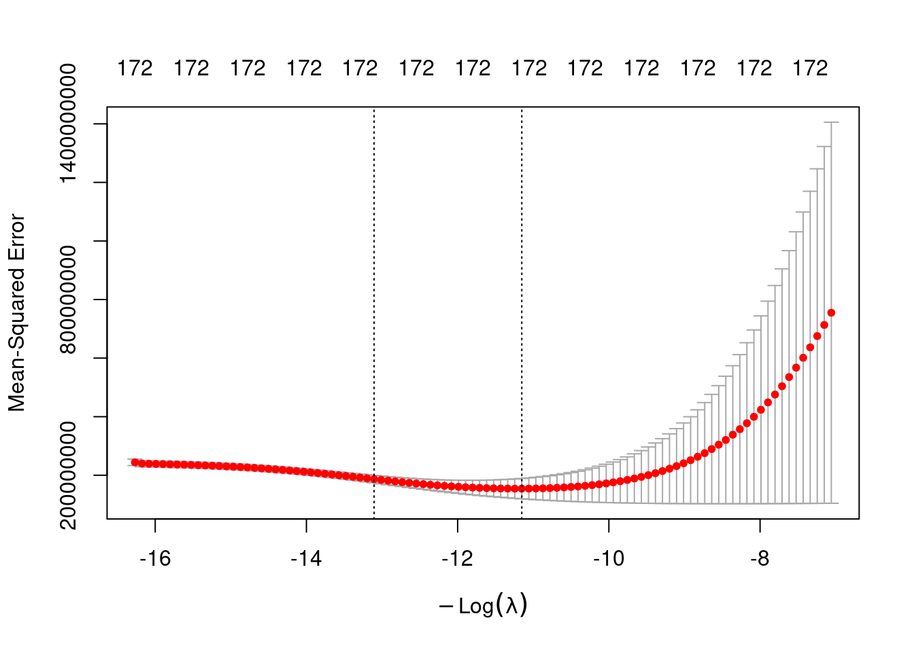
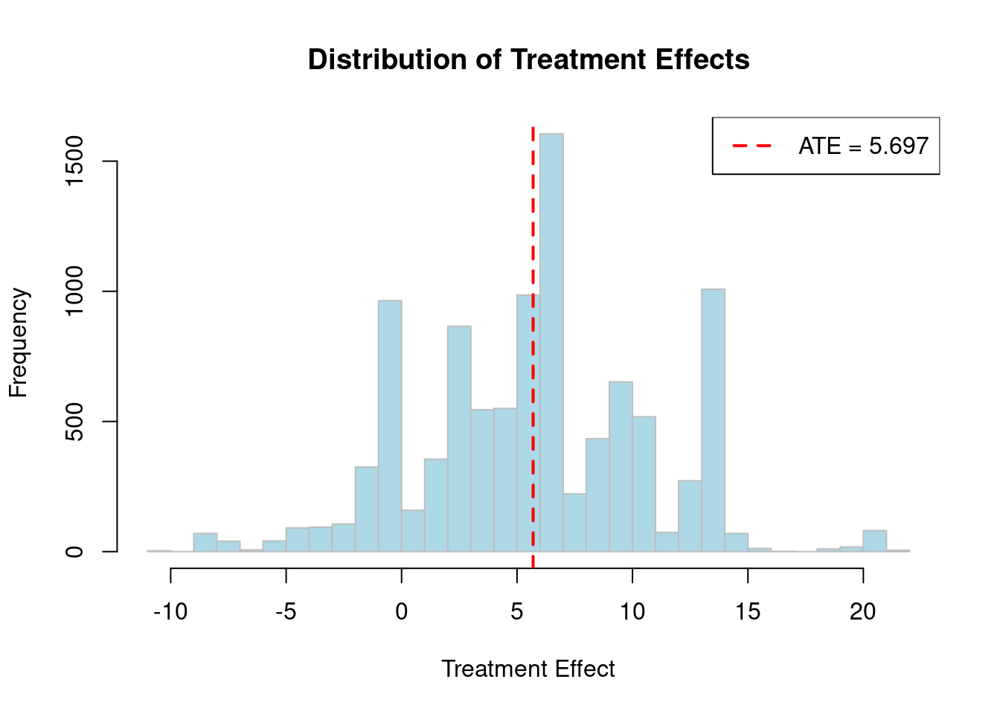
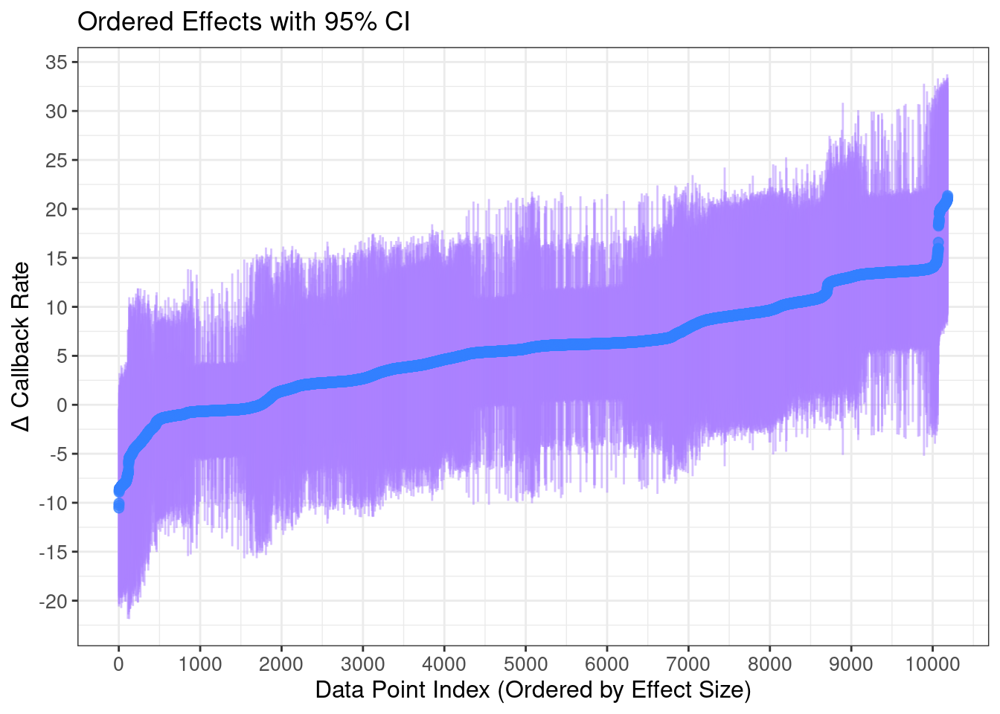
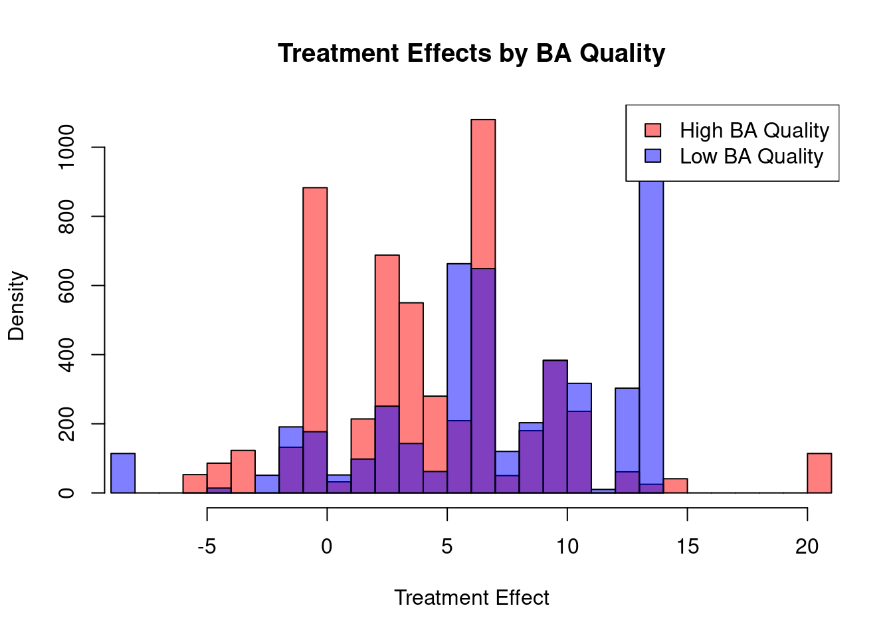
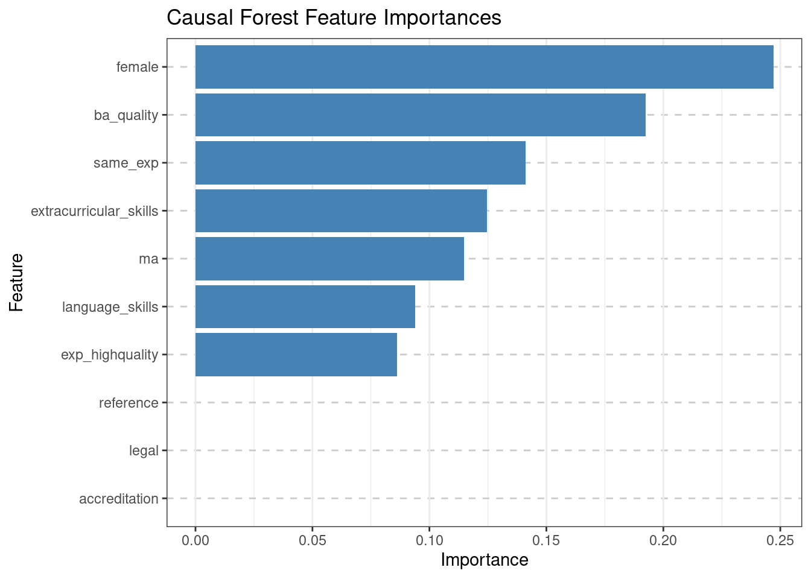
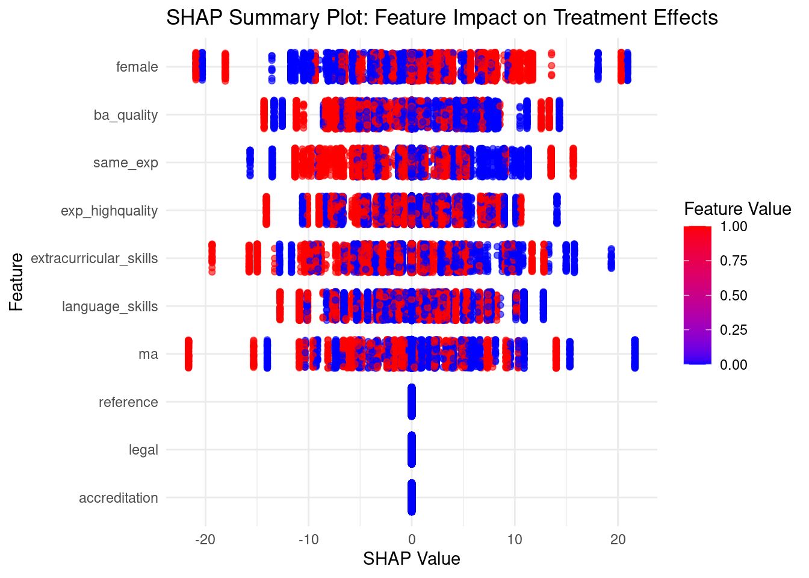

Chapter 9
Code Call-out 9.1:
This Code Call Out is under construction.
This code call out returns to a context we have already encountered in Chapter 3, namely that of seeking to estimate the effect of the National Supported Work (NSW) demonstration using observational methods. The NSW is a labor training program which was experimentally evaluated, and we can consider how methods which compare the experimental group which received the NSW with control groups from surveys (which did receive the NSW treatment). This context was first considered by LaLonde (1986), who aimed to document how the estimated effect when using an observational control group selected from large surveys compares to the experimental benchmark.
In Chapter 3 we explored this setting using propensity score methods, as in Dehejia and Wahba (2002), Dehejia and Wahba (1999). In this current code call out we will conduct a similar analysis, however seek to examine how models such as the LASSO would select relevant control variables from among a large group of potential controls. Such a setting was discussed in Farrell (2015). Note however that in this code call out, we will be principally focusing on model selection procedures as a way to understand the mechanics of the LASSO and other shrinkage-based regression models. Importantly, we will not delve into a range of ways these tools can be employed to seek to isolate causal effects, as this is something we will explore at more length in code call outs 9.3 and 9.4.
This dataset we use here will be virtually identical to that which we encountered in Chapter 3, however includes a richer set of potential controls, as discussed below. Namely, data consists of both the NSW experimental sample (nsw == 1) and the PSID survey sample (nsw == 0). The NSW sample consists of both the experimental treated and control group, while the PSID sample consists simply of potential “control units” drawn from the general population. The dataset contains information about their earnings in 1978 (y) after the completition of the program (in case of treated observations), as well as several other demographic covariates and pre-treatment earnings (1974 and 1975). Specifically, data consists of the following variables.
- y: earn1978
- treat: 1 if individual i received the training program and 0 if not.
- v3: age
- v4: education
- v5: black
- v6: hispanic
- v7: married
- v8: nodegree
- v9: re74
- v10: re75
- v11: re74 == 0
- v12: re75 == 0
- v13-v34: interactions of continuous variables (age, education, re74, re75 with
all covariates)
- v35-v48: interactions of dummy variables (married, black, hispanic, nodegree, re74==0,
re75==0 with dummy covariates)
- v49-v173: polynomials up to order five of the continuous covariates (age,
educ, earn1974 earn1975)
- nsw: 1 if dataset uses NSW sample for control group and 0 if dataset uses PSID sample.
It is important to note that the original dataset does not contain interactions of continuous variables, interactions of dummy variables and polynomials up to order five of the continuous variables. However, as our main goal is to study the model selection, including these covariates will enable us to evaluate multiple models simultaneously and test which one adjusts better in terms of bias-variance tradeoff and finds the best prediction of the outcome variable.
The subsequent methods we will analyze involve rescaling all covariates to address overfitting. To ensure comparability among covariates, it is necessary to standardize all covariates in our dataset, excluding the dependent variable and the treatment indicator.
Let’s begin by clearing our work space and loading packages we will require. Note that we have made a list of libraries that we wish to load and then done then loaded them using lapply to iterate through this loop. We could of course simply load the libraries one by one by typing library(dplyr) and so forth, but this lapply based approach is nice as we can simply add libraries to our list if we realise later that we need more. Also note that this code requires that the libraries are actually installed on your system. If they are not installed, you sould install them first, which can be done as install.packages("glmnet", dependencies = TRUE) and so forth.
# Clear all the information in your memory.
rm(list=ls())
# Preventing scientific notation.
options(scipen = 6)
# Load a series of libraries
# List of libraries
library_list <- c("dplyr", "ggplot2", "sandwich", "lmtest", "readr", "glmnet")
# Load all libraries
lapply(library_list, function(x) {
library(x, character.only = TRUE)
})Now, we load the data provided by Farrell (2015) and begin our analysis by filtering the experimental and observational samples.
# Import Farrell dataset.
Farrell2015 <- read_csv("data/Farrell2015.csv")
# Filter the experimental sample.
nsw <- filter(Farrell2015, nsw == 1)
# Filter the observational sample.
psid <- filter(Farrell2015, nsw == 0)Let’s have a look and confirm the number of individuals in the treatment and control groups for each of the samples below:
# Experimental sample (NSW).
count(nsw, treat)# A tibble: 2 × 2
treat n
<dbl> <int>
1 0 260
2 1 185# Observational sample (PSID).
count(psid, treat)# A tibble: 2 × 2
treat n
<dbl> <int>
1 0 2490
2 1 185You can note that the data provided by Farrell (2015) has directly included the (NSW) treated units also in the psid sample as treated observations, so we can consider our two dataframes nsw and psid as the samples we will wish to work with. In the experimental sample, there are a total of 445 observations, with 185 individuals in the treatment group and 260 individuals in the control group. In the non-experimental sample, there are 2,675 observations, with the same 185 treated individuals, along with the sample of 2,490 controls drawn from the PSID.
Baseline Linear Models and Experimental Benchmark
Before we dig into the use of Lasso and other shrinkage-based estimators, we will have a quick look at the outcomes, and confirm the experimental benchmark estimate. Of course, because we are comparing a targeted intervention (the NSW) with survey data from the entire population, we will expect a substantial difference beween the non-experimental sample and the treated units. Thus, we should not be dismayed to see that even descriptively, outcomes among “control” units are much higher than among their experimentally treated counter-parts. We observe this below by setting up a histogram stratifying by the treatment variable treat. You can check how these results differ when using the experimental sample (nsw).
# Histogram of earnings for PSID Sample.
ggplot(psid) +
geom_histogram(data = psid,
aes(x = y, fill = factor(treat)),
color = "black",
alpha = 0.5,
bins = 30) +
scale_fill_manual(values = c("0" = "blue", "1" = "red"),
labels = c("Control Group", "Treatment Group")) +
labs(title = "Histogram of earnings for PSID Sample",
x = "Real annual earnings in 1978",
y = "Frequency",
fill = "Group") +
theme_bw()
Below we esitmate the true impact of the NSW based on the experimental sample. We do this as standard with a biviarate regression of the outcome on treatment receipt in the experimental sample, using coeftest to generate heteroscedasticity-robust standard errors:
Experimental_Benchmark <- lm(y ~ treat, data = nsw)
coeftest(Experimental_Benchmark, vcov = vcovHC(Experimental_Benchmark, type="HC1"))
t test of coefficients:
Estimate Std. Error t value Pr(>|t|)
(Intercept) 4554.80 340.20 13.3884 < 2.2e-16 ***
treat 1794.34 670.82 2.6748 0.007753 **
---
Signif. codes: 0 '***' 0.001 '**' 0.01 '*' 0.05 '.' 0.1 ' ' 1We have seen previously, the experimental benchmark effect is that participating in the NSW increases yearly wages in 1978 by $1,794, which is precisely the value reported by LaLonde (1986). A similar bivariate regression of salary on treatment receipt for the non-experimental sample clearly fails to replicate these results, owing to the substantial differences between treated units and the PSID sample:
library(sandwich)
Observational_Benchmark <- lm(y ~ treat, data = psid)
coeftest(Observational_Benchmark, vcov = vcovHC(Observational_Benchmark, type="HC1"))
t test of coefficients:
Estimate Std. Error t value Pr(>|t|)
(Intercept) 21553.92 311.78 69.131 < 2.2e-16 ***
treat -15204.78 655.91 -23.181 < 2.2e-16 ***
---
Signif. codes: 0 '***' 0.001 '**' 0.01 '*' 0.05 '.' 0.1 ' ' 1Here, we estimat the the training program actually served to decrease average salaries by $15,205 in annual earnings for treated individuals. As we can observe, these results are clearly biased due to the absence of randomization. A natural solution is thus to condition on covariates. Below we do so, incorporating variables such as age, education, black, hispanic, married, nodegree, re74, and re75 into our regression, obtaining the following results:
Observational_Benchmark_Covariates <- lm(y ~ treat + v3 + v4 + v5 + v6 + v7 + v8 + v9 + v10, data = psid)
coeftest(Observational_Benchmark_Covariates, vcov = vcovHC(Observational_Benchmark_Covariates, type="HC1"))
t test of coefficients:
Estimate Std. Error t value Pr(>|t|)
(Intercept) -129.74 1878.37 -0.0691 0.94494
treat 751.95 783.26 0.9600 0.33713
v3 -2992.17 743.23 -4.0259 0.000058337 ***
v4 7336.01 1516.57 4.8372 0.000001391 ***
v5 1123.16 451.74 2.4863 0.01297 *
v6 -308.35 236.66 -1.3029 0.19271
v7 401.26 225.81 1.7770 0.07568 .
v8 6346.75 1409.22 4.5037 0.000006965 ***
v9 12846.48 1502.91 8.5477 < 2.2e-16 ***
v10 340.84 367.63 0.9271 0.35395
---
Signif. codes: 0 '***' 0.001 '**' 0.01 '*' 0.05 '.' 0.1 ' ' 1If you are intested to see regression-adjustment in this setting at more length, I would refer you to code call out 3.3 where we document how one could specify a slightly richer regression-based framework which you could explore. Nevertheless, we see here that this model where controls are incorporated in a linear fashion results in estimates that are reasonably far from the experimental benchmark. While this adjustment is an improvement over the simple bivariate regression, it appears clear that relevant unobservables are still not being caught. Below we examine whether higher-order polynomials and interactions between these variables appear to be relevant in explaining the outcome of interest.
Lasso Selection and Post-Lasso
We of course do not the nature of selection into the NSW sample, though clearly it is not captured fully by the linear control specification we consider above. It may be the case… HERE In non-experimental evaluations, treatment effects depend heavily on how the econometric model is specified. In the best scenario if the econometric model perfectly specified, we should observe the same results using an experimental and non-experimental samples. The key is to select the right model.
Given the previous analysigs, we could attempt to overfit our model by including all available covariates in our dataset. Considering the collinearity problems, we exclude v3, v4, v8 and v9. This is equivalent to estimating:
Observational_All_Covariates <- lm(y ~ treat + . - nsw - v3 - v4 - v8 - v9, data = psid)
coeftest(Observational_All_Covariates, vcov = vcovHC(Observational_All_Covariates, type="HC1"))t test of coefficients:
Estimate Std. Error t value Pr(>|t|)
(Intercept) 48100.99822 8368.77619 5.7477 0.00000001014 ***
treat 83.16333 933.45152 0.0891 0.9290157
v5 151.66099 3915.34278 0.0387 0.9691047
v6 -1788.13164 2775.18976 -0.6443 0.5194219
v7 358.01233 1301.30547 0.2751 0.7832484
v10 16610.46638 11950.49157 1.3899 0.1646705
v11 681.62235 3843.22409 0.1774 0.8592424
v12 -8767.04494 4619.22672 -1.8979 0.0578179 .
v13 1826.11597 1968.66259 0.9276 0.3537085
v14 305.08900 1845.29251 0.1653 0.8686947
v15 1230.57773 1004.91313 1.2246 0.2208557
v16 -874.12488 455.54934 -1.9188 0.0551185 .
(output omitted)
v169 224836.43268 53495.95388 4.2029 0.00002727853 ***
v170 -29179.84736 9788.16263 -2.9811 0.0028995 **
v171 -40788.64696 13025.42051 -3.1315 0.0017594 **
v172 -124323.51469 46024.14532 -2.7013 0.0069541 **
v173 37485.17537 9322.13595 4.0211 0.00005964041 ***
---
Signif. codes: 0 '***' 0.001 '**' 0.01 '*' 0.05 '.' 0.1 ' ' 1In this case, despite a slight improvement in our estimations by including 174 covariates compared to our observational benchmark, our model produces a poorer estimator compared to when only 8 covariates were included (and remains biased). The reasoning is that when our model becomes overly complex relative to the available data, it may capture many specific fluctuations that reduce its predictive power. These issues can be addressed using Machine Learning techniques such as model selection and tuning, cross-validation, and regularization to penalize the unnecessary complexity of our model.
Lasso Selection (with an arbitrary penalty):
When dealing with numerous explanatory variables, we can enhance our model by introducing additional penalties to discourage the inclusion of many variables. This can be achieved using the ‘Least Absolute Shrinkage and Selection Operator (LASSO)’ method. The Lasso method extends our Ordinary Least Squares (OLS) optimization problem by adding a constraint on the coefficients, which enforces some of them to be exactly zero. This coefficient shrinkage is controlled by a ‘lambda’ parameter that determines the strength of the regularization.
Lasso regression regularizes includes the sum of the absolute value of coefficients in the estimation minimand.
\[ \underset{\beta}{\text{argmin}}\left\{\sum_{i=1}^N(Y_i-X^\prime\beta)^2+\lambda(||\beta||_1)\right\} \tag{1}\]
During the optimization process, Lasso eliminates all covariates that are not significantly correlated with the outcome variable, thereby aiding in model selection and enabling more efficient predictions.
Considering the NSW sample we first analyze what happen when we impose an arbitrary value of lambda. When lambda equals 0 there is no penalty and we are in the same situation as OLS. No coefficients are set to zero and all covariates are selected. As we increase the value of lambda more coefficients are zero and fewer variables are used.
To run Lasso selection we can use the command glmnet of glmnet package considering an alpha = 1, including the dependent variable and all the covariates in our model. It is important to exclude the treatment variable from this process to accurately determine the optimal lambda parameter. Selecting an arbitrary lambda can be done using the lambda option of glmnet command. In this case we impose a lambda value of 11.
BROUGHT THIS DOWN FROM ABOVE – RE-ORGANISE SLIGHTLY Now, we will analyze the impact of the training program on individuals’ earnings and compare the differences across each sample. Since we have 174 covariates, we can streamline our code by separating the outcome variable, the treatment variable, and all covariates with an identifier to reference each type of variable. Given that the main analysis will be conducted using the observational sample, we extract those observations.
# Extract relevant variables.
y <- psid %>% select("y")
treat <- psid %>% select("treat")
all_covariates <- psid %>% select(num_range("v", 3:173))Since Lasso operates only on matrices, we organize all of these variables into a matrix format.
# Variables in matrix format.
y <- as.matrix(y)
treat <- as.matrix(treat)
all_covariates <- as.matrix(all_covariates)# Lasso selection with lambda value of 11.
Lasso_with_Lambda_11 <- glmnet(all_covariates,y, alpha = 1, lambda = 11)
print(Lasso_with_Lambda_11)
Call: glmnet(x = all_covariates, y = y, alpha = 1, lambda = 11)
Df %Dev Lambda
1 125 66.84 11Here, the number of non-zero coefficients is represented by the effective degrees of freedom (df) for the lasso. This command also shows the deviance explained by our model (%dev) and the selected lambda (Lambda).
To see which covariates are retained after the selection process in list format, we can use the coef command. This command displays the optimal shrinkage coefficients after the regularization procedure. However, since our main goal is to use this set of selected regressors to refit the model by least squares, we should not consider these estimates.
# Lasso selected variables (with an arbitrary penalty of 11).
coef(Lasso_with_Lambda_11) 172 x 1 sparse Matrix of class "dgCMatrix"
s0
(Intercept) 8444.9782883
v3 -234.3732230
v4 1397.2180650
.
v6 -828.4572084
.
v8 10258.0351004
v9 1671.1681300
.
v12 -1716.6501958
.
v15 839.3838018
v16 -576.8806782
.
v19 2752.6152019
v20 -1615.4820661
.
v22 492.5036555
.
v24 1428.8120851
v25 -2178.8107862
v26 1.4172184
v27 809.6188806
v28 32.3571364
v29 -11.4386660
v30 -463.2854774
v31 2583.2925155
v32 -928.4933823
v33 268.3352020
v34 2413.5664483
v35 -136.0565083
v36 336.8897268
v37 68.1888894
v38 -929.7743051
.
v40 -818.2244377
.
v42 268.6837040
v43 618.7511295
v44 151.1508729
v45 400.1526449
v46 -312.8871282
v47 497.4572806
v48 -227.2980055
v49 -934.2045852
.
v51 470.7457821
v52 123.9423093
v53 35.0684943
v54 0.6307851
v55 49.4393008
v56 1390.6125078
v57 -246.8641561
v58 -6.6008972
.
v60 -455.3134993
v61 711.0245468
v62 -571.8811925
v63 1376.7839816
.
v65 -270.5225732
v66 19.8893982
v67 -417.4691664
v68 301.2039688
v69 179.5040807
v70 2.6879091
v71 3220.8705501
v72 1115.8477921
v73 1192.8079340
.
v75 477.0907827
v76 1909.4450029
v77 -250.0223419
v78 -409.8965388
v79 -480.8567644
v80 730.6072558
v81 1410.8996730
v82 -1346.0783135
v83 -470.7528583
.
v86 3048.7676863
v87 9.0090129
v88 -269.3932792
v89 -3621.0623092
.
v91 228.6127608
v92 -3038.2394075
.
v94 358.1387121
v95 685.1403975
.
v97 2198.4614474
v98 -2313.8198191
.
v100 -75.9187936
v101 1293.8932388
v102 732.2851082
v103 -1672.5153150
v104 2072.1663433
v105 -664.7260885
v106 -4661.1470223
v107 793.2489586
v108 -1369.0130023
v109 184.3700729
v110 -1731.5961989
v111 -80.3149552
v112 564.8403941
.
v116 248.3528486
v117 1105.4846675
v118 -257.6631917
.
v120 -271.5251046
v121 -2076.8529982
v122 -1247.4107278
v123 3624.9437442
v124 377.7993120
v125 -4569.1357149
v126 1379.1108890
.
v128 -3338.3431583
v129 2303.1461113
v130 4657.7898879
.
v133 2604.6473108
.
v135 -2557.8491135
v136 -6767.7589158
v137 -852.6494588
v138 -3487.5731907
v139 -7.3754687
.
v141 -6175.4429771
v142 2843.2251622
.
v144 881.2355500
v145 3355.3251603
.
v147 3241.5125827
v148 2529.9942293
.
v151 -513.9053272
.
v153 2617.3882767
v154 8.8764933
.
v159 330.9693044
v160 -200.4074409
v161 -1659.5567473
.
v163 -517.8951440
v164 1094.2045484
.
v170 887.5122289
v171 -494.4879941
v172 9781.6171683
v173 -1262.8484118
---
Note: Part of the output has been suppressed to save space.Then, when imposing a lambda value of 11, Lasso selected 125 out of the 172 available covariates. As mentioned above, this represents a relatively small penalty. If we choose a larger penalty, such as lambda equals 1100, we should expect fewer covariates to be selected.
# Lasso selected variables (with an arbitrary penalty of 1100).
Lasso_with_Lambda_1100 <- glmnet(all_covariates, y, alpha = 1, lambda = 1100)
print(Lasso_with_Lambda_1100)
Call: glmnet(x = all_covariates, y = y, alpha = 1, lambda = 1100)
Df %Dev Lambda
1 9 58.01 1100# Lasso selected variables (with an arbitrary penalty of 1100).
coef(Lasso_with_Lambda_1100)172 x 1 sparse Matrix of class "dgCMatrix"
s0
(Intercept) 3319.9268060
v4 3477.0350746
.
v8 5940.6855159
v9 11403.8294124
.
v34 465.2881421
.
v54 172.5494047
.
v69 0.1343391
.
v104 17.7797971
.
v123 97.6755793
.
v126 15.9059705
---
Note: Part of the output has been suppressed to save space.As we can see, with lambda equals 1100 only 9 covariates are selected.
Another way to analyze this is by graphing the coefficients’ path using the coef command.

dev.off()null device
1 This graph shows how each coefficient changes with varying values of the Lasso penalty (L1-norm). Recall that the L1-norm is the sum of the absolute values of all regression coefficients. Since we did not use a selection method, the graph displays the path of all coefficients. As we will see later, after applying a selection method, all non-selected coefficients should converge to zero. The remaining coefficients are those selected by Lasso.
Considering the covariates selected by Lasso, we can run a regression for the non-experimental sample. As mentioned above, models using only the treatment variable or the treatment plus all covariates resulted in biased estimators of coefficients. By using the 125 covariates selected with a lambda value of 11 and the 9 covariates selected with a lambda value of 1100, this is equivalent to estimate:
# Regression with coefficients selected considering a lambda value of 11.
Lasso_Lambda11 <- lm(y ~ treat + v3 + v4 + v6 + v8 + v9 + v12 + v15 + v16 + v19 + v20 + v22 + v24 + v25 + v26 + v27 + v28 + v29 + v30 + v31 + v32 + v33 + v34 + v35 + v36 + v37 + v38 + v40 + v42 + v43 + v44 + v45 + v46 + v47 + v48 + v49 + v51 + v52 + v53 + v54 + v55 + v56 + v57 + v58 + v60 + v61 + v62 + v63 + v65 + v66 + v67 + v68 + v69 + v70 + v71 + v72 + v73 + v75 + v76 + v77 + v78 + v79 + v80 + v81 + v82 + v83 + v86 + v87 + v88 + v89 + v91 + v92 + v94 + v95 + v97 + v98 + v100 + v101 + v102 + v103 + v104 + v105 + v106 + v107 + v108 + v109 + v110 + v111 + v112 + v116 + v117 + v118 + v120 + v121 + v122 + v123 + v124 + v125 + v126 + v128 + v129 + v130 + v133 + v135 + v136 + v137 + v138 + v139 + v141 + v142 + v144 + v145 + v147 + v148 + v151 + v153 + v154 + v159 + v160 + v161 + v163 + v164 + v170 + v171 + v172 + v173, data = psid)
coeftest(Lasso_Lambda11, vcov = vcovHC(Lasso_Lambda11, type="HC1"))t test of coefficients:
Estimate Std. Error t value Pr(>|t|)
(Intercept) -8678318.1504 11874558481.3342 -0.0007 0.9994169
treat 366.5284 978.9957 0.3744 0.7081437
v3 9086568.0034 12708141769.7346 0.0007 0.9994296
v4 -141.1316 3897.9222 -0.0362 0.9711202
v6 -1505.3071 749.4549 -2.0085 0.0446916 *
v8 10603.4012 4290.1756 2.4716 0.0135176 *
v9 5386.7467 4679.1056 1.1512 0.2497438
(output omitted)
v164 1889.5285 1030.0088 1.8345 0.0666995 .
v170 316.7101 1293.4822 0.2449 0.8065917
v171 -595.3702 879.7087 -0.6768 0.4986062
v172 14575.9115 3319.2281 4.3914 0.00001172 ***
v173 -1844.2658 784.2234 -2.3517 0.0187630 *
---
Signif. codes: 0 '***' 0.001 '**' 0.01 '*' 0.05 '.' 0.1 ' ' 1# Regression with coefficients selected considering a lambda value of 1100.
Check_Lambda1100 <- lm(y ~ treat + v4 + v8 + v9 + v34 + v54 + v69 + v104 + v123 + v126, data = psid)
coeftest(Check_Lambda1100, vcov = vcovHC(Check_Lambda1100, type="HC1"))
t test of coefficients:
Estimate Std. Error t value Pr(>|t|)
(Intercept) -1869.90 1027.30 -1.8202 0.0688398 .
treat 579.15 698.65 0.8290 0.4072015
v4 7309.19 1052.36 6.9455 4.720e-12 ***
v8 8549.01 1408.36 6.0702 1.459e-09 ***
v9 10305.27 1384.02 7.4459 1.293e-13 ***
v34 1840.08 495.20 3.7158 0.0002067 ***
v123 -150.79 594.13 -0.2538 0.7996704
v126 977.74 548.96 1.7811 0.0750119 .
---
Signif. codes: 0 '***' 0.001 '**' 0.01 '*' 0.05 '.' 0.1 ' ' 1As we can see, this regression still estimates biased coefficients. With 122 covariates, the model predicts that the job training program results in an average of $367 extra annual earnings for treated individuals. With 6 covariates, the model predicts an average of $579 extra annual earnings. Considering our experimental benchmark — the $1,794 estimate from the randomized experiment in Table 1 — and the non-experimental estimate of $-15,204 using only the treatment variable of Table 2, this represents a clear improvement in our estimation when using observational data. Additionally, in both cases, we can check that we obtain a higher R-squared values. However, these results are still worse compared to the non-experimental estimate with the treatment variable plus all demographic covariates in Table 3, which is $751 extra annual earnings on average for treated individuals.
Lasso Selection (with cross-validation).
We can improve these results by using cross-validation to determine the penalties for covariate selection, rather than assigning an arbitrary value for lambda. This can be achieved using the cv.glmnet command. Since the cross-validation algorithm splits the sample randomly, we should set a seed to ensure reproducibility. It is important to set the seed each time we run the cv.glmnet command; otherwise, we will get different results each time.”
# Running Lasso with cross-validation algorithm.
set.seed(123)
cvlasso <- cv.glmnet(all_covariates, y)
print(cvlasso)
Call: cv.glmnet(x = all_covariates, y = y)
Measure: Mean-Squared Error
Lambda Index Measure SE Nonzero
min 338.7 39 100880228 8440413 20
1se 1984.1 20 109287967 8472254 4# Lasso selected variables (with cross-validation penalties).
coef(cvlasso, s = "lambda.min") s1
(Intercept) 3421.3027264
v3 -1621.9694958
v4 4811.9711679
.
v8 6591.7825563
v9 10316.7995901
.
v19 303.9847138
.
v22 136.6391689
.
v28 87.3480259
.
v34 1498.4127615
.
v40 -200.3559605
.
v54 0.3240565
.
v69 701.1505233
.
v73 46.3766414
.
v84 -450.2896361
.
v118 -40.6602588
.
v126 290.7988681
.
v137 -196.8506627
.
v148 32.1766639
.
v161 359.8803250
.
v163 -399.2395615
.
v167 -400.9750121
---
Note: Part of the output has been suppressed to save space.In this case, using 10-fold cross-validation, the lambda that minimizes the mean squared error and helps avoid overfitting is 338.7. With this tuning parameter, we only need to include 20 covariates in our regression model. Graphically, we can observe that the selected lambda with cross-validation is the lambda at which the smallest MSE is achieved by using the plot command.
# Coefficient paths for each L1 norm.
plot(cvlasso)
dev.off()null device
1 This plots the cross-validation curve (red dotted line) along with upper and lower standard deviation curves for each lambda. The first vertical line represents the logarithm of the minimum lambda that mean-squared error with cross-validation. This means that a lambda of 338.7 (or ln(lambda) = 5,8), is enough to eliminate covariates that are not significantly correlated with the outcome variable. Then a higher lambda imposes a stronger regularization process, but at the expenses to get a higher mean-squared error.
Considering the non-experimental sample and the optimal covariates selected through cross-validation penalties, we can estimate the effect of the labor program on individuals’ earnings. This is equivalent to estimate:
# Post-Lasso with Cross-Validation Penalties.
Lasso_Cross_Validation <- lm(y ~ treat + v3 + v4 + v8 + v9 + v19 + v22 + v28 + v34 + v40 + v54 + v69 + v73 + v84 + v118 + v126 + v137 + v148 + v161 + v163 + v167, data = psid)
coeftest(Lasso_Cross_Validation, vcov = vcovHC(Lasso_Cross_Validation, type="HC1"))
t test of coefficients:
Estimate Std. Error t value Pr(>|t|)
(Intercept) 3501.94 1407.40 2.4882 0.0128988 *
treat 930.37 806.27 1.1539 0.2486362
v3 -3025.57 728.77 -4.1516 3.406e-05 ***
v4 4278.92 1127.86 3.7938 0.0001516 ***
v8 8612.16 1312.02 6.5640 6.276e-11 ***
v9 9785.92 1333.12 7.3406 2.812e-13 ***
v19 745.43 466.52 1.5979 0.1101929
v22 207.78 221.60 0.9376 0.3485176
v28 381.33 318.53 1.1971 0.2313571
v34 2040.34 482.58 4.2280 2.438e-05 ***
v40 -417.30 238.06 -1.7529 0.0797380 .
v73 328.12 263.44 1.2455 0.2130484
v84 -990.47 427.36 -2.3176 0.0205457 *
v118 -426.71 257.15 -1.6594 0.0971500 .
v126 357.96 503.45 0.7110 0.4771464
v137 -290.66 420.86 -0.6906 0.4898589
v148 107.37 231.47 0.4639 0.6427762
v161 447.84 296.04 1.5128 0.1304538
v163 -594.43 283.09 -2.0998 0.0358401 *
v167 -762.02 787.48 -0.9677 0.3332965
---
Signif. codes: 0 '***' 0.001 '**' 0.01 '*' 0.05 '.' 0.1 ' ' 1As we can see, with 20 covariates (2 of them omitted due collinearity), we obtain a better approximation of the experimental benchmark of table Table 1. In this case, the model predicts that the job training program results in an average increase of $930 in annual earnings for treated individuals. What is particularly notable is that these results are not to disimilar to those found by Dehejia and Wahba (2002) and Dehejia and Wahba (1999), who estimated using Propensity Score Matching (PSM) for the non-experimental sample that the estimates could range between $1,473 and $1,691. Like their results, none of the estimates (using PSM and Post-Lasso) are statistically significant.
Considering the results shown above, it is important to emphasize that Machine Learning methods do not create quasi-experimental variations. These methods only select covariates from a large set of potential candidates. This implies that none of these results can be considered causal estimates of the program. To achieve causal estimates, the conditional independence assumption must hold (Angrist and Frandsen (2022)).
The presented procedure is called Post-Lasso. It involves using the Lasso-selected set of regressors for the dependent variable against all covariates to refit the model using least squares. One of the main characteristics of this procedure is that it helps remove the bias imposed by Lasso when shrinking coefficients towards zero. In contexts where the sample size is larger than the effective number of relevant covariates needed to predict the dependent variable (sometimes called the effective dimension), Lasso and Post-Lasso regression come close to the population regression function (Chernozhukov (2024)).
In the context of high-dimensional data, this property is less likely to hold. Many authors argue that when the number of effective covariates exceeds the number of observations, Post-Lasso can lead to biased estimators and incorrect confidence intervals.
A different procedure proposed in the literature is called Post-Double Lasso. This procedure consists in three steps:
Regress
yagainst all control variables and select relevant predictors using Lasso (i.e estimate Equation 1).Regress
treatagainst all control variables and select relevant predictors using Lasso.Regress
yagainsttreatand all control variables selected in the previous two steps.
By performing Post-Double Lasso, we can address part of the omitted-variable bias that might arise using Post-Lasso when not considering relevant variables correlated with the treatment variable, and obtain more accurate confidence intervals.
Ridge & Elastic Net.
Ridge Regressions.
In Machine Learning we commonly see alternative models which apply penalization techniques, or shrinkage methods, like the Lasso. Two common examples are Ridge and Elastic Net, which we will explore here. Ridge regression follows the same logic as Lasso regression but uses a different norm for the regularization procedure. In this case we include the sum of squared regression coefficients in the estimation minimand.
\[ \underset{\beta}{\text{argmin}}\left\{\sum_{i=1}^N(Y_i-X_i^\prime\beta)^2 +\lambda\sum_{j=1}^p\beta_j^2\right\}. \tag{2}\]
This change implies that Ridge Regression penalizes high coefficient values by introducing a penalty that shrinks them towards zero, but never sets them exactly to zero. As a result, this regularization method is not suitable for model selection but is useful in high-dimensional models where overfitting is a concern. The main goal of Ridge regression is to find coefficients estimates that fit the data well, by making the Residual Sum of Squares (RSS) small.
To perform Ridge regression, we use the command glmnet of glmnet package, including the dependent variable and all the covariates in our model. As with Lasso regression, we include a seed to ensure reproducibility. The main difference is that we need to select the option alpha == 0 in the command line and include the treatment indicator variable to assess the treatment effect after shrinkage.
# Matrix of treat + all covariates.
x <- cbind(treat, all_covariates)
# Ridge regularization (with cross-validation penalties).
set.seed(123)
cvridge <- cv.glmnet(x,y, alpha = 0)
print(cvridge)
Call: cv.glmnet(x = x, y = y, alpha = 0)
Measure: Mean-Squared Error
Lambda Index Measure SE Nonzero
min 69664 56 154204345 34658651 172
1se 491467 35 186740901 12740282 172As we can see, the lambda that optimizes our objective function is 69664, and all covariates were selected. We can plot each standardized variable as a function of the logarithm of lambda using the plot command and check that this penalization minimizes the mean squared error.
# Coefficient paths for each L1 norm.
plot(cvridge)
With the tuning parameter lambda set to 69664, we can estimate our coefficients using the coef command.
coef(cvridge) s1
(Intercept) 18882.23145375
treat -289.58485705
v3 110.80622833
v4 488.15299202
v5 157.20157182
v6 -100.29140590
v7 -3.18139446
v8 385.08236988
v9 406.06255741
v10 -114.07140857
v11 -105.36727290
v12 -125.49902873
v13 120.01490377
v14 -94.65484434
v15 -86.23924230
v16 -3.23053348
(output omitted)
v169 16.43086489
v170 6.54576748
v171 -10.88562654
v172 1.23010038
v173 -10.19730883Comparing these results with the simple regression of y on the treatment indicator and all covariates (see Table 4), we can see that all covariates experienced substantial shrinkage towards zero. Compared to Lasso, Ridge regression does not allow us to avoid shrinkage, as we cannot extract covariates and apply them in an OLS regression. Given the high level of penalization, these results are expected. Another remarkable result is that v3, v4, v8 and v9 were not ommited in our estimations as OLS did without penalization. This is due an important property of Ridge estimators: they do not suffer from multicollinearity. This is an important property which holds even when the number of regressors exceeds the sample size.
Elastic Net
There are some contexts in which you might be working with datasets containing numerous covariates—so many that it is impractical to know everything about each one. In these cases we certainly need to use some regularization methods to estimate our coefficients effectively. The main challenge is that, in this context, we may have many covariates that are useless and many others that are useful. This is where Elastic Net comes into play.
Elastic Net is a regularization method that combines the advantages of Lasso and Ridge regression by taking a weighted average of their penalties.
\[ \underset{\beta}{\text{argmin}}\left\{\sum_{i=1}^N(Y_i-X_i^\prime\beta)^2 + \sum_{j=1}^p(\alpha|\beta_j|+(1-\alpha)\beta_j^2)\right\}, \tag{3}\]
where the weight alpha ranges between 0 and 1. When alpha equals 0, the method reduces to Ridge regression, as discussed in the previous section. Conversely, when alpha equals 1, it corresponds to Lasso regression. Both parameters, alpha and lambda, are determined using cross-validation.
To perform Elastic Net regression, use the command cv.glmnet considering an arbitrary value of alpha, and specifying the dependent variable, the treatment indicator variable, and all the covariates in the model. We ensure reproducibility by including a seed. Here we consider five different values for alpha. Optimal tuning parameters, the mean-squared error and the numbers of selected coefficients are presented in table Table 7.
# Elastic Net regularization (with cross-validation penalties).
set.seed(123)
cvelasticnet <- cv.glmnet(x,y, alpha = select)
print(cvelasticnet)| alpha | lambda | Mean-Squared Error | Nonzero |
|---|---|---|---|
| 1 | 338.7 | 100880228 | 20 |
| 0.75 | 451.7 | 100820803 | 22 |
| 0.50 | 677 | 100744889 | 26 |
| 0.25 | 1632 | 101011900 | 23 |
| 0 | 69664 | 154204345 | 172 |
Additional Considerations and Conclusion.
Even though we know that these regularization procedures do not provide causal interpretations when the conditional independence assumption does not hold, one of the main concerns related to these methods — specifically Lasso — is the wide variation in control variable choices induced by changes in tuning parameters (Angrist and Frandsen (2022)). In this section, we will explore some of these concerns and see how our results change with a few variations in the specification of our model. With these findings, we do not aim to undervalue the powerful methods outlined here, but rather to highlight some considerations that researchers should be aware of when using these machine learning methods in empirical analysis
Changing the Cross-Validation Seed.
As noted in the Lasso section, all of our specifications used a seed of 123. This seed resulted in Lasso selecting 20 covariates with cross-validation penalties and a lambda parameter of 338.7. We can modify this by using another seed such as 321 with the set.seed(321) option in the cv.glmnet command.
# Lasso regression with cross-validation and a seed value of 321.
set.seed(321)
cvlasso321 <- cv.glmnet(all_covariates, y)
print(cvlasso321)
Call: cv.glmnet(x = all_covariates, y = y)
Measure: Mean-Squared Error
Lambda Index Measure SE Nonzero
min 233.5 43 100057152 6609279 38
1se 1500.9 23 106134444 6026902 4This seed resulted in 38 selected variables with a penalization parameter of 233.5. By using the coef(cvlasso, s = "lambda.min") command, we can identify which variables were retained. These results are shown in column (2) of Table 8. Notably, with the 321 seed, all covariates included with the 123 seed were selected.
(1) (2)
seed123 seed321
v3 X X
v4 X X
v8 X X
v9 X X
v19 X X
v22 X X
v28 X X
v31 X
v34 X X
v38 X
v40 X X
v45 X
v47 X
v49 X
v50 X
v54 X X
v58 X
v59 X
v67 X
v69 X X
v70 X
v73 X X
v75 X
v84 X X
v90 X
v96 X
v101 X
v118 X X
v126 X X
v137 X X
v141 X
v147 X
v148 X X
v161 X X
v163 X X
v167 X X
v170 X
v173 XWith these new covariates, we can estimate the effect of the labor program on individuals’ earnings using the non-experimental sample. We omit v3 and v49 due to collinearity.
Lasso_Cross_Validation <- lm(y ~ treat + v4 + v8 + v9 + v19 + v22 + v28 + v31 + v34 + v38 + v40 + v45 + v47 + v50 + v54 + v58 + v59 + v67 + v69 + v70 + v73 + v75 + v84 + v90 + v96 + v101 + v118 + v126 + v137 + v141 + v147 + v148 + v161 + v163 + v167 + v170 + v173, data = psid)
coeftest(Lasso_Cross_Validation, vcov = vcovHC(Lasso_Cross_Validation, type="HC1"))t test of coefficients:
Estimate Std. Error t value Pr(>|t|)
(Intercept) -824.0504 1321.4386 -0.6236 0.5329436
treat 118.9413 1118.8882 0.1063 0.9153499
v4 6673.6324 1379.8222 4.8366 0.0000013967714 ***
v8 8048.8475 1264.6704 6.3644 0.0000000002304 ***
v9 8593.1956 1386.4414 6.1980 0.0000000006614 ***
v19 926.1474 507.7856 1.8239 0.0682810 .
v22 -141.4310 355.6107 -0.3977 0.6908740
(output omitted)
v148 630.4975 306.5904 2.0565 0.0398342 *
v161 1656.0295 700.3531 2.3646 0.0181233 *
v163 -780.4892 395.0598 -1.9756 0.0483015 *
v167 -280.8169 990.9205 -0.2834 0.7769002
v170 539.3027 475.6814 1.1337 0.2570033
v173 -730.4474 433.3174 -1.6857 0.0919699 .
---
Signif. codes: 0 '***' 0.001 '**' 0.01 '*' 0.05 '.' 0.1 ' ' 1Comparing these results with those reported in Table 5 which considers the 123 seed, we observe that our treatment effect is now lower. Although our estimation underestimates the causal effect of the labor program relative to our experimental benchmark, this estimation is closer than estimation with the specification that included only the treatment variable. n This example demonstrate the wide variation in control variable choices induced by changes in tuning parameters and how they can impact our estimations. Researchers should be aware of these considerations when conducting impact evaluations using these methods for model selection. Despite this, the strength of machine learning methods lies in their ability to handle high-dimensional control scenarios and conduct sensitivity analyses in regression contexts where choosing among different model specifications is crucial for robustness. While these methods do not replace theory or human intuition, they can serve as valuable tools for guiding the testing of our results.
Code Call Out 9.2: Double-debiased Machine Learning
This Code Call Out is under construction.
Double Selection
As noted in the work of Belloni et al. (2012), consider a linear model where a variable, \(d_i\) is taken as exogenous after conditioning on control variables:
\[ y_i = \alpha d_i + x_i'\theta*y + r*{yi} +* \zeta\_i, \quad \quad E\[\zeta*i \| d_i, x_i, r{y,i}\] = 0 \]
Where \(d_i\) is the treatment, \(x_i\) is a high-dimensional vector of controls \((p > n)\), $r_{y_i} is the approximation error to the variable \(y_i\), and \(\alpha\) is the treatment effect.
Assume that we decide to select control variables using the LASSO approach that we explained in previous sections. Because LASSO optimizes prediction, not learning about specific model parameters, we can drop variables correlating with the treatment since they tend not to add much predictive power for the outcome when the treatment is in the model (Belloni et al. (2012)). Hence, it will lead to a substantial omitted variable bias if the coefficient in \(\theta_y\) associated with the omitted variable is nonzero.
We can remedy this by introducing the “reduced-form” equation
\[ d_i = x_i' \theta_d + r_{d,i} + v_i, \quad E[v_i \mid x_i, r_{d,i}] = 0, \]
and then writing the combined system in reduced-form predictive terms:
\[ y_i = x_i'(\alpha \theta_d + \theta_y) + (\alpha r_{d,i} + r_{y,i}) + (\alpha v_i + \zeta_i). \]
Both equations are now forecasting rules, so we can apply variable-selection methods separately to each one.
The recommended “double selection” procedure works as follows. First, use a variable-selection method (such as LASSO) to pick the controls that best predict the outcome. Second, use the same method to pick the controls that best predict the treatment. Third, take the union of those two sets of controls. Finally, estimate the treatment effect by regressing the outcome on the treatment and all controls in that combined set.
First, we import the relevant packages that we are going to use:
# Load required libraries
library(tidyverse) # For data manipulation
library(glmnet) # For LASSO
library(DoubleML) # For DoubleML routines
library(sandwich) # For robust covariance estimators
library(lmtest) # For coeftest
library(fastDummies) # For creating dummy variables
library(stargazer) # Data visualization for tables.
library(mlr3)
library(mlr3learners)
library(mlr3tuning)
library(fixest) # fast FE regressions + clustered SEWe load the state-level panel data used by Belloni et al. (2012), which mirrors Donohue and Levitt’s 1985–1997 dataset (50 states × 12 years):
data <- read_csv("data/Belloni_et_al_2014.csv")With data loaded, we can construct the first-difference variables for crime and abortion rates, define our large set of candidate controls (lagged crime and abortion variables, state characteristics, interactions, etc.), and then apply the double-selection routine exactly as outlined above to estimate the causal effect of legalized abortion on crime.
#code-fold=TRUE
#---------------------------------------------
# 1. Data cleaning
# ---------------------------------------------
# Drop DC
data <- data %>%
filter(statenum != 9)
# Drop years not used
data <- data %>%
filter(year >= 85, year <= 97)
# Normalized trend variable
data <- data %>%
mutate(trend = (year - 85) / 12)
# Sort data by statenum and year for time series operations
data <- data %>%
arrange(statenum, year)
# Generate variables for LASSO
data <- data %>%
mutate(
xxincome = xxincome / 100,
xxpover = xxpover / 100,
xxafdc15 = xxafdc15 / 10000,
xxbeer = xxbeer / 100
)
# Create year dummies
year_dummies <- fastDummies::dummy_cols(data, select_columns = "year", remove_first_dummy = TRUE, remove_selected_columns = FALSE)
tdums <- names(year_dummies)[grepl("^year_", names(year_dummies))]
data <- bind_cols(data, year_dummies[tdums])
# Define raw variables
xx <- c("xxprison", "xxpolice", "xxunemp", "xxincome", "xxpover", "xxafdc15", "xxgunlaw", "xxbeer")
# Differences
data <- data %>%
arrange(statenum, year) %>%
group_by(statenum) %>%
mutate(across(all_of(xx), ~ . - lag(.), .names = "D{.col}")) %>%
ungroup()
Dxx <- paste0("D", xx)
# Squared Differences
for (x in Dxx) {
data[[paste0(x, "2")]] <- data[[x]]^2
}
Dxx2 <- paste0(Dxx, "2")
# Difference Interactions
DxxInt <- c()
nxx <- length(Dxx)
for (ii in 1:nxx) {
if (ii < nxx) {
for (jj in (ii + 1):nxx) {
temp1 <- Dxx[ii]
temp2 <- Dxx[jj]
name <- paste0(temp1, "X", temp2)
data[[name]] <- data[[temp1]] * data[[temp2]]
DxxInt <- c(DxxInt, name)
}
}
}
# Lags
data <- data %>%
arrange(statenum, year) %>%
group_by(statenum) %>%
mutate(across(all_of(xx), ~ lag(.), .names = "L{.col}")) %>%
ungroup()
Lxx <- paste0("L", xx)
# Squared Lags
for (x in Lxx) {
data[[paste0(x, "2")]] <- data[[x]]^2
}
Lxx2 <- paste0(Lxx, "2")
# Means
data <- data %>%
group_by(statenum) %>%
mutate(across(all_of(xx), ~ mean(., na.rm = TRUE), .names = "M{.col}")) %>%
ungroup()
Mxx <- paste0("M", xx)
# Squared Means
for (x in Mxx) {
data[[paste0(x, "2")]] <- data[[x]]^2
}
Mxx2 <- paste0(Mxx, "2")
# Initial Levels
data <- data %>%
group_by(statenum) %>%
mutate(across(all_of(xx), ~ first(.), .names = "{.col}0")) %>%
ungroup()
xx0 <- paste0(xx, "0")
# Squared Initial Levels
for (x in xx0) {
data[[paste0(x, "2")]] <- data[[x]]^2
}
xx02 <- paste0(xx0, "2")
# Initial Differences
data <- data %>%
arrange(statenum, year) %>%
group_by(statenum) %>%
mutate(across(all_of(Dxx), ~ nth(., 2), .names = "{.col}0")) %>%
ungroup()
Dxx0 <- paste0(Dxx, "0")
# Interactions with trends
biglist <- c(Dxx, Dxx2, DxxInt, Lxx, Lxx2, Mxx, Mxx2, xx0, xx02, Dxx0)
IntT <- c()
for (x in biglist) {
data[[paste0(x, "Xt")]] <- data[[x]] * data$trend
data[[paste0(x, "Xt2")]] <- data[[x]] * (data$trend^2)
IntT <- c(IntT, paste0(x, "Xt"), paste0(x, "Xt2"))
}
shared <- c(biglist, IntT)
# Specific controls
outcomes <- c("viol", "prop", "murd")
AllControls <- list()
for (name in outcomes) {
# Create differenced outcome variable
data <- data %>%
arrange(statenum, year) %>%
group_by(statenum) %>%
mutate(!!paste0("D", name) := get(paste0("efa", name)) - lag(get(paste0("efa", name)))) %>%
ungroup()
# Initial level and other transformations
data <- data %>%
group_by(statenum) %>%
mutate(
!!paste0(name, "0") := first(get(paste0("efa", name)))
) %>%
ungroup()
# Initial difference (second observation)
data <- data %>%
arrange(statenum, year) %>%
group_by(statenum) %>%
mutate(
!!paste0("D", name, "0") := nth(get(paste0("D", name)), 2)
) %>%
ungroup()
# Squared terms
data[[paste0(name, "02")]] <- data[[paste0(name, "0")]]^2
data[[paste0("D", name, "02")]] <- data[[paste0("D", name, "0")]]^2
# Interactions with trend
data[[paste0(name, "0Xt")]] <- data[[paste0(name, "0")]] * data$trend
data[[paste0(name, "0Xt2")]] <- data[[paste0(name, "0")]] * (data$trend^2)
data[[paste0(name, "02Xt")]] <- data[[paste0(name, "02")]] * data$trend
data[[paste0(name, "02Xt2")]] <- data[[paste0(name, "02")]] * (data$trend^2)
data[[paste0("D", name, "0Xt")]] <- data[[paste0("D", name, "0")]] * data$trend
data[[paste0("D", name, "0Xt2")]] <- data[[paste0("D", name, "0")]] * (data$trend^2)
data[[paste0("D", name, "02Xt")]] <- data[[paste0("D", name, "02")]] * data$trend
data[[paste0("D", name, "02Xt2")]] <- data[[paste0("D", name, "02")]] * (data$trend^2)
# Create control list for this outcome
cont_vars <- c(
paste0(name, "0"), paste0(name, "0Xt"), paste0(name, "0Xt2"),
paste0(name, "02"), paste0(name, "02Xt"), paste0(name, "02Xt2"),
paste0("D", name, "0"), paste0("D", name, "0Xt"), paste0("D", name, "0Xt2"),
paste0("D", name, "02"), paste0("D", name, "02Xt"), paste0("D", name, "02Xt2")
)
AllControls[[name]] <- c(cont_vars, shared)
}
# Global variables
AllViol <- AllControls[["viol"]]
AllProp <- AllControls[["prop"]]
AllMurd <- AllControls[["murd"]]
# Differenced outcomes
data <- data %>%
arrange(statenum, year) %>%
group_by(statenum) %>%
mutate(
Dyviol = lpc_viol - lag(lpc_viol),
Dyprop = lpc_prop - lag(lpc_prop),
Dymurd = lpc_murd - lag(lpc_murd)
) %>%
ungroup()
# ---------------------------------------------
# Full list of controls by outcome (including year dummies)
# ---------------------------------------------
AllViol <- c(AllControls[["viol"]])
AllMurd <- c(AllControls[["murd"]])
AllProp <- c(AllControls[["prop"]])
# ---------------------------------------------
# Drop any rows with missing differenced y or d
# ---------------------------------------------
data <- data %>%
drop_na(Dyviol, Dviol, Dyprop, Dprop, Dymurd, Dmurd)We estimate the regressions for different scenarios:
\[ y_{c i t} = \alpha_{c}\,a_{c i t} + w_{i t}^{\prime}\beta_{c} + \delta_{c i} + \gamma_{c t} + \varepsilon_{c i t}. \]
The dependent variable, \(y_{c i t}\), indexes the crime rate for crime type \(c\) (violent, property, or murder) in state \(i\) and year \(t\). On the right‐hand side, \(a_{c i t}\) is the abortion rate relevant for type \(c\); \(w_{i t}\) is a vector of time‐varying state‐level controls; \(\delta_{c i}\) are state‐specific fixed effects; and \(\gamma_{c t}\) are time‐specific effects capturing national trends. For control variables \(w_{i t}\), Donohue and Levitt (2001) include the log of lagged prisoners per capita, the log of lagged police per capita, the unemployment rate, per‐capita income, the poverty rate, the generosity of AFDC at \(t-15\), a concealed‐weapons law dummy, and beer consumption per capita.
We observe crime and abortion rates over a twelve‐year period. To implement the double‐selection procedure outlined above, we fit the following first‐difference system:
\[ \Delta y_{c i t} = \alpha_{c}\,\Delta a_{c i t} + z_{c i t}^{\prime}\beta_{c} + \tilde{\gamma}_{c t} + \Delta\varepsilon_{c i t}, \]
\[ \Delta a_{c i t} = z_{c i t}^{\prime}\Pi_{c} + \tilde{\kappa}_{c t} + \Delta v_{c i t}, \]
where \(\Delta y_{c i t}=y_{c i t}-y_{c i,t-1}\), \(\Delta a_{c i t}=a_{c i t}-a_{c i,t-1}\), \(z_{c i t}\) is the vector of candidate controls, and \(\tilde{\gamma}_{c t}\), \(\tilde{\kappa}_{c t}\) are year effects.
Now, let’s consider that approach to do our Double selection approach manually. We’re going to use the LASSO procedure that we implemented in the previous section, now to both dependent variable and independent variable, and then run a regression taking the union of both controls.
# ---------------------------------------------
# Double‑selection LASSO (violent crime example)
# ---------------------------------------------
set.seed(123)
# 1. Controls matrix
controls_mat <- data %>%
select(all_of(AllViol)) %>%
mutate(across(everything(), as.numeric)) %>%
as.matrix()
# 2. LASSO for outcome
y <- as.numeric(data$Dyviol)
cv_y <- cv.glmnet(
x = controls_mat,
y = y,
nfolds = 10,
alpha = 1, # LASSO
maxit = 1e4,
type.measure = "mse"
)
sel_y <- rownames(coef(cv_y))[-1][coef(cv_y)[-1, 1] != 0]
# 3. LASSO for treatment
d <- as.numeric(data$Dviol)
cv_d <- cv.glmnet(
x = controls_mat,
y = d,
nfolds = 10,
alpha = 1,
maxit = 1e4,
type.measure = "mse"
)
sel_d <- rownames(coef(cv_d))[-1][coef(cv_d)[-1, 1] != 0]
# 4. Union of selected controls
sel_union <- union(sel_y, sel_d)
# 5. Final OLS with year dummies + clustering
data <- data %>% mutate(treat = d)
rhs <- paste(
c("treat",
sel_union,
"factor(year)"),
collapse = " + "
)
form_final <- as.formula(paste("Dyviol ~", rhs))
ols_fit <- lm(form_final, data = data)
# Cluster‑robust vcov at state level
cl_vcov <- vcovCL(ols_fit, cluster = data$statenum)
cl_se <- sqrt(diag(cl_vcov))
# 6. Table
stargazer(
ols_fit,
se = list(cl_se),
type = "text",
omit.stat = c("f","ser"),
keep = "treat"
)
========================================
Dependent variable:
---------------------------
Dyviol
----------------------------------------
treat -0.052
(0.151)
----------------------------------------
Observations 600
R2 0.413
Adjusted R2 0.279
========================================
Note: *p<0.1; **p<0.05; ***p<0.01Double Debiased
While the double selection procedure helps address omitted variable bias by selecting controls relevant for both the outcome and treatment, Double/Debiased Machine Learning (DDML) goes a step further by orthogonalizing both variables with respect to the controls. This approach is closely related to the Frisch-Waugh-Lovell (FWL) theorem and is particularly useful in high-dimensional settings. Considering that we’re keeping all the times the year fixed effects, we’re going to always residualize for them.
We’re going to follow this procedure to do the manual approach: - Residualize the outcome and treatment on year fixed effects
Use LASSO to select relevant controls for both \(\Delta y_{c i t}\) and \(\Delta a_{c i t}\)
Partial out the selected controls from both \(\Delta y_{c i t}\) and \(\Delta a_{c i t}\): For each variable, regress the residualized outcome and treatment on their respective selected controls, and obtain the residuals.
Regress the residualized outcome on the residualized treatment: This final step estimates \(\alpha_c\) using only the variation in \(\Delta a_{c i t}\) that is orthogonal to the controls, yielding a debiased estimate.
This procedure can be summarized in code as:
# ---------------------------------------------
# Double LASSO manually (violent crime)
# ---------------------------------------------
set.seed(123)
# 0. Residualize both Y and D by Year FE.
r_y <- feols(Dyviol ~ 0 | year, data = data)$residuals
r_x <- feols(Dviol ~ 0 | year, data = data)$residuals
# 1. Define Controls
# Controls
AllViol_num = data %>%
select(all_of(AllViol)) %>%
sapply(as.numeric)
n_controls <- ncol(AllViol_num)
n_rows <- nrow(AllViol_num)
# 2. Residualize Dyviol
fit_y_cv <- cv.glmnet(AllViol_num, r_y, nfolds = 10, alpha = 1, maxit = 10000,
nlambda = 100, standardize = FALSE, intercept = TRUE, thresh = 1e-7,
lambda.min.ratio = 1e-3)
sel_y <- which(coef(fit_y_cv, s = "lambda.min")[-1] != 0)
cat("Number of selected controls for Y:", length(sel_y), "of", n_controls, " \n")Number of selected controls for Y: 16 of 312 r_y2 <- resid(lm(r_y ~ AllViol_num[, sel_y, drop = FALSE]))
# 3. Residualize Dviol
fit_x_cv <- cv.glmnet(AllViol_num, r_x, nfolds = 10, alpha = 1, maxit = 10000,
nlambda = 100, standardize = FALSE, intercept = TRUE, thresh = 1e-7,
lambda.min.ratio = 1e-3)
sel_x <- which(coef(fit_x_cv, s = "lambda.min")[-1] != 0)
cat("Number of selected controls for X:", length(sel_x), "of", n_controls, " \n")Number of selected controls for X: 68 of 312 r_x2 <- resid(lm(r_x ~ AllViol_num[, sel_x, drop = FALSE]))
# 4. Final FWL regression: r_y2 on r_x2 with clustered SE
FWL_mat2 <- data.frame(const = 1, r_x2 = r_x2)
fit_fwl2 <- lm(r_y2 ~ r_x2, data = FWL_mat2)
vcov_cl_fwl2 <- sandwich::vcovCL(fit_fwl2, cluster = ~ data$statenum)
stargazer(fit_fwl2,
se = list( sqrt(diag(vcov_cl_fwl2)) ),
type = "text",
omit.stat = c("f","ser"))
========================================
Dependent variable:
---------------------------
r_y2
----------------------------------------
r_x2 -0.267**
(0.109)
Constant 0.000
(0.002)
----------------------------------------
Observations 600
R2 0.007
Adjusted R2 0.005
========================================
Note: *p<0.1; **p<0.05; ***p<0.01We can do a similar procedure using the command DoubleML from (DoubleML2022?)
set.seed(123)
# ---------------------------------------------
# DoubleML procedure using DoubleML package (violent crime)
# ---------------------------------------------
# Residualize both Y and D by Year FE.
r_y <- feols(Dyviol ~ 0 | year, data = data)$residuals
r_x <- feols(Dviol ~ 0 | year, data = data)$residuals
# Prepare DoubleML data object
#data2 = data %>%
# drop_na(Dyviol2, Dviol2, all_of(AllViol))
data2 = data %>%
drop_na(all_of(AllViol))
data2$Dyviol2 <- r_y
data2$Dviol2 <- r_x
dml_data <- DoubleMLData$new(
data = data2 %>% as.data.frame(),
y_col = "Dyviol2",
d_cols = "Dviol2",
x_cols = AllViol
)
# Define LASSO learner for both stages
lasso_learner <- lrn("regr.cv_glmnet", nfolds = 10, alpha = 1, maxit = 10000,
nlambda = 100, standardize = FALSE, intercept = TRUE, thresh = 1e-7,
lambda.min.ratio = 1e-3)
# Instantiate DoubleMLPLR object
dml_nosplit <- DoubleMLPLR$new(
data = dml_data,
ml_l = lasso_learner,
ml_m = lasso_learner,
n_folds=1,
score = "partialling out"
)
dml_nosplit$fit()INFO [01:03:36.206] [mlr3] Applying learner 'regr.cv_glmnet' on task 'nuis_l' (iter 1/1)INFO [01:03:38.464] [mlr3] Applying learner 'regr.cv_glmnet' on task 'nuis_m' (iter 1/1)stargazer(dml_nosplit$summary(),
type = "text",
omit.stat = c("f","ser"))Estimates and significance testing of the effect of target variables
Estimate. Std. Error t value Pr(>|t|)
Dviol2 -0.2486 0.1263 -1.968 0.0491 *
---
Signif. codes: 0 '***' 0.001 '**' 0.01 '*' 0.05 '.' 0.1 ' ' 1
===============================================
Estimate. Std. Error t value Pr(> | t| )
-----------------------------------------------
Dviol2 -0.249 0.126 -1.968 0.049
-----------------------------------------------However, the best procedure comes when we apply cross fitting by splitting the sample. In this scenario, cross/fitting performs well empirically because the entire sample can be used for estimation. Instead of running the external predictions, we’re gonna use the option n_folds = to split the sample.
set.seed(123)
# 0. Data
dml_data <- DoubleMLData$new(
data = data2 %>% as.data.frame(),
y_col = "Dyviol2",
d_cols = "Dviol2",
x_cols = AllViol
)
# 1. DoubleML‑PLR object (10 folds)
dml_split2 <- DoubleMLPLR$new(
data = dml_data,
ml_l = lasso_learner,
ml_m = lasso_learner,
n_folds = 10,
score = "partialling out"
)
dml_split2$fit()INFO [01:03:39.259] [mlr3] Applying learner 'regr.cv_glmnet' on task 'nuis_l' (iter 1/10)
INFO [01:03:41.534] [mlr3] Applying learner 'regr.cv_glmnet' on task 'nuis_l' (iter 2/10)
INFO [01:03:43.564] [mlr3] Applying learner 'regr.cv_glmnet' on task 'nuis_l' (iter 3/10)
INFO [01:03:45.598] [mlr3] Applying learner 'regr.cv_glmnet' on task 'nuis_l' (iter 4/10)
INFO [01:03:47.690] [mlr3] Applying learner 'regr.cv_glmnet' on task 'nuis_l' (iter 5/10)
INFO [01:03:49.729] [mlr3] Applying learner 'regr.cv_glmnet' on task 'nuis_l' (iter 6/10)
INFO [01:03:52.016] [mlr3] Applying learner 'regr.cv_glmnet' on task 'nuis_l' (iter 7/10)
INFO [01:03:53.761] [mlr3] Applying learner 'regr.cv_glmnet' on task 'nuis_l' (iter 8/10)
INFO [01:03:55.825] [mlr3] Applying learner 'regr.cv_glmnet' on task 'nuis_l' (iter 9/10)
INFO [01:03:57.658] [mlr3] Applying learner 'regr.cv_glmnet' on task 'nuis_l' (iter 10/10)INFO [01:03:59.513] [mlr3] Applying learner 'regr.cv_glmnet' on task 'nuis_m' (iter 1/10)
INFO [01:04:00.228] [mlr3] Applying learner 'regr.cv_glmnet' on task 'nuis_m' (iter 2/10)
INFO [01:04:00.835] [mlr3] Applying learner 'regr.cv_glmnet' on task 'nuis_m' (iter 3/10)
INFO [01:04:01.394] [mlr3] Applying learner 'regr.cv_glmnet' on task 'nuis_m' (iter 4/10)
INFO [01:04:01.975] [mlr3] Applying learner 'regr.cv_glmnet' on task 'nuis_m' (iter 5/10)
INFO [01:04:02.640] [mlr3] Applying learner 'regr.cv_glmnet' on task 'nuis_m' (iter 6/10)
INFO [01:04:03.203] [mlr3] Applying learner 'regr.cv_glmnet' on task 'nuis_m' (iter 7/10)
INFO [01:04:03.731] [mlr3] Applying learner 'regr.cv_glmnet' on task 'nuis_m' (iter 8/10)
INFO [01:04:04.319] [mlr3] Applying learner 'regr.cv_glmnet' on task 'nuis_m' (iter 9/10)
INFO [01:04:04.835] [mlr3] Applying learner 'regr.cv_glmnet' on task 'nuis_m' (iter 10/10)stargazer(dml_split2$summary(),
type = "text",
omit.stat = c("f","ser"))Estimates and significance testing of the effect of target variables
Estimate. Std. Error t value Pr(>|t|)
Dviol2 -0.2296 0.1121 -2.047 0.0406 *
---
Signif. codes: 0 '***' 0.001 '**' 0.01 '*' 0.05 '.' 0.1 ' ' 1
===============================================
Estimate. Std. Error t value Pr(> | t| )
-----------------------------------------------
Dviol2 -0.230 0.112 -2.047 0.041
-----------------------------------------------Code Call Out 9.2: Double-debiased Machine Learning [OLDER]
As noted in the work of Belloni et al. (2012), consider a linear model where a variable, \(d_i\) is taken as exogenous after conditioning on control variables:
\[ y_i = \alpha d_i + x_i'\theta*y + r*{yi} +* \zeta\_i, \quad \quad E\[\zeta*i \| d_i, x_i, r{y,i}\] = 0 \]
Where \(d_i\) is the treatment, \(x_i\) is a high-dimensional vector of controls \((p > n)\), $r_{y_i} is the approximation error to the variable \(y_i\), and \(\alpha\) is the treatment effect.
Assume that we decide to select control variables using the LASSO approach that we explained in previous sections. Because LASSO optimizes prediction, not learning about specific model parameters, we can drop variables correlating with the treatment since they tend not to add much predictive power for the outcome when the treatment is in the model (Belloni et al. (2012)). Hence, it will lead to a substantial omitted variable bias if the coefficient in \(\theta_y\) associated with the omitted variable is nonzero.
We can remedy this by introducing the “reduced-form” equation
\[ d_i = x_i' \theta_d + r_{d,i} + v_i, \quad E[v_i \mid x_i, r_{d,i}] = 0, \]
and then writing the combined system in reduced-form predictive terms:
\[ y_i = x_i'(\alpha \theta_d + \theta_y) + (\alpha r_{d,i} + r_{y,i}) + (\alpha v_i + \zeta_i). \]
Both equations are now forecasting rules, so we can apply variable-selection methods separately to each one.
The recommended “double selection” procedure works as follows. First, use a variable-selection method (such as LASSO) to pick the controls that best predict the outcome. Second, use the same method to pick the controls that best predict the treatment. Third, take the union of those two sets of controls. Finally, estimate the treatment effect by regressing the outcome on the treatment and all controls in that combined set.
First, we import the relevant packages that we are going to use:
# Load required libraries
library(tidyverse) # For data manipulation
library(glmnet) # For LASSO
library(DoubleML) # For DoubleML routines
library(sandwich) # For robust covariance estimators
library(lmtest) # For coeftest
library(fastDummies) # For creating dummy variables
library(stargazer) # Data visualization for tables.
library(mlr3)
library(mlr3learners)
library(mlr3tuning)
library(fixest) # fast FE regressions + clustered SEWe load the state-level panel data used by Belloni et al. (2012), which mirrors Donohue and Levitt’s 1985–1997 dataset (50 states × 12 years):
data <- read_csv("data/Belloni_et_al_2014.csv")With data loaded, we can construct the first-difference variables for crime and abortion rates, define our large set of candidate controls (lagged crime and abortion variables, state characteristics, interactions, etc.), and then apply the double-selection routine exactly as outlined above to estimate the causal effect of legalized abortion on crime.
#code-fold=TRUE
#---------------------------------------------
# 1. Data cleaning
# ---------------------------------------------
# Drop DC
data <- data %>%
filter(statenum != 9)
# Drop years not used
data <- data %>%
filter(year >= 85, year <= 97)
# Normalized trend variable
data <- data %>%
mutate(trend = (year - 85) / 12)
# Sort data by statenum and year for time series operations
data <- data %>%
arrange(statenum, year)
# Generate variables for LASSO
data <- data %>%
mutate(
xxincome = xxincome / 100,
xxpover = xxpover / 100,
xxafdc15 = xxafdc15 / 10000,
xxbeer = xxbeer / 100
)
# Create year dummies
year_dummies <- fastDummies::dummy_cols(data, select_columns = "year", remove_first_dummy = TRUE, remove_selected_columns = FALSE)
tdums <- names(year_dummies)[grepl("^year_", names(year_dummies))]
data <- bind_cols(data, year_dummies[tdums])
# Define raw variables
xx <- c("xxprison", "xxpolice", "xxunemp", "xxincome", "xxpover", "xxafdc15", "xxgunlaw", "xxbeer")
# Differences
data <- data %>%
arrange(statenum, year) %>%
group_by(statenum) %>%
mutate(across(all_of(xx), ~ . - lag(.), .names = "D{.col}")) %>%
ungroup()
Dxx <- paste0("D", xx)
# Squared Differences
for (x in Dxx) {
data[[paste0(x, "2")]] <- data[[x]]^2
}
Dxx2 <- paste0(Dxx, "2")
# Difference Interactions
DxxInt <- c()
nxx <- length(Dxx)
for (ii in 1:nxx) {
if (ii < nxx) {
for (jj in (ii + 1):nxx) {
temp1 <- Dxx[ii]
temp2 <- Dxx[jj]
name <- paste0(temp1, "X", temp2)
data[[name]] <- data[[temp1]] * data[[temp2]]
DxxInt <- c(DxxInt, name)
}
}
}
# Lags
data <- data %>%
arrange(statenum, year) %>%
group_by(statenum) %>%
mutate(across(all_of(xx), ~ lag(.), .names = "L{.col}")) %>%
ungroup()
Lxx <- paste0("L", xx)
# Squared Lags
for (x in Lxx) {
data[[paste0(x, "2")]] <- data[[x]]^2
}
Lxx2 <- paste0(Lxx, "2")
# Means
data <- data %>%
group_by(statenum) %>%
mutate(across(all_of(xx), ~ mean(., na.rm = TRUE), .names = "M{.col}")) %>%
ungroup()
Mxx <- paste0("M", xx)
# Squared Means
for (x in Mxx) {
data[[paste0(x, "2")]] <- data[[x]]^2
}
Mxx2 <- paste0(Mxx, "2")
# Initial Levels
data <- data %>%
group_by(statenum) %>%
mutate(across(all_of(xx), ~ first(.), .names = "{.col}0")) %>%
ungroup()
xx0 <- paste0(xx, "0")
# Squared Initial Levels
for (x in xx0) {
data[[paste0(x, "2")]] <- data[[x]]^2
}
xx02 <- paste0(xx0, "2")
# Initial Differences
data <- data %>%
arrange(statenum, year) %>%
group_by(statenum) %>%
mutate(across(all_of(Dxx), ~ nth(., 2), .names = "{.col}0")) %>%
ungroup()
Dxx0 <- paste0(Dxx, "0")
# Interactions with trends
biglist <- c(Dxx, Dxx2, DxxInt, Lxx, Lxx2, Mxx, Mxx2, xx0, xx02, Dxx0)
IntT <- c()
for (x in biglist) {
data[[paste0(x, "Xt")]] <- data[[x]] * data$trend
data[[paste0(x, "Xt2")]] <- data[[x]] * (data$trend^2)
IntT <- c(IntT, paste0(x, "Xt"), paste0(x, "Xt2"))
}
shared <- c(biglist, IntT)
# Specific controls
outcomes <- c("viol", "prop", "murd")
AllControls <- list()
for (name in outcomes) {
# Create differenced outcome variable
data <- data %>%
arrange(statenum, year) %>%
group_by(statenum) %>%
mutate(!!paste0("D", name) := get(paste0("efa", name)) - lag(get(paste0("efa", name)))) %>%
ungroup()
# Initial level and other transformations
data <- data %>%
group_by(statenum) %>%
mutate(
!!paste0(name, "0") := first(get(paste0("efa", name)))
) %>%
ungroup()
# Initial difference (second observation)
data <- data %>%
arrange(statenum, year) %>%
group_by(statenum) %>%
mutate(
!!paste0("D", name, "0") := nth(get(paste0("D", name)), 2)
) %>%
ungroup()
# Squared terms
data[[paste0(name, "02")]] <- data[[paste0(name, "0")]]^2
data[[paste0("D", name, "02")]] <- data[[paste0("D", name, "0")]]^2
# Interactions with trend
data[[paste0(name, "0Xt")]] <- data[[paste0(name, "0")]] * data$trend
data[[paste0(name, "0Xt2")]] <- data[[paste0(name, "0")]] * (data$trend^2)
data[[paste0(name, "02Xt")]] <- data[[paste0(name, "02")]] * data$trend
data[[paste0(name, "02Xt2")]] <- data[[paste0(name, "02")]] * (data$trend^2)
data[[paste0("D", name, "0Xt")]] <- data[[paste0("D", name, "0")]] * data$trend
data[[paste0("D", name, "0Xt2")]] <- data[[paste0("D", name, "0")]] * (data$trend^2)
data[[paste0("D", name, "02Xt")]] <- data[[paste0("D", name, "02")]] * data$trend
data[[paste0("D", name, "02Xt2")]] <- data[[paste0("D", name, "02")]] * (data$trend^2)
# Create control list for this outcome
cont_vars <- c(
paste0(name, "0"), paste0(name, "0Xt"), paste0(name, "0Xt2"),
paste0(name, "02"), paste0(name, "02Xt"), paste0(name, "02Xt2"),
paste0("D", name, "0"), paste0("D", name, "0Xt"), paste0("D", name, "0Xt2"),
paste0("D", name, "02"), paste0("D", name, "02Xt"), paste0("D", name, "02Xt2")
)
AllControls[[name]] <- c(cont_vars, shared)
}
# Global variables
AllViol <- AllControls[["viol"]]
AllProp <- AllControls[["prop"]]
AllMurd <- AllControls[["murd"]]
# Differenced outcomes
data <- data %>%
arrange(statenum, year) %>%
group_by(statenum) %>%
mutate(
Dyviol = lpc_viol - lag(lpc_viol),
Dyprop = lpc_prop - lag(lpc_prop),
Dymurd = lpc_murd - lag(lpc_murd)
) %>%
ungroup()
# ---------------------------------------------
# Full list of controls by outcome (including year dummies)
# ---------------------------------------------
AllViol <- c(AllControls[["viol"]])
AllMurd <- c(AllControls[["murd"]])
AllProp <- c(AllControls[["prop"]])
# ---------------------------------------------
# Drop any rows with missing differenced y or d
# ---------------------------------------------
data <- data %>%
drop_na(Dyviol, Dviol, Dyprop, Dprop, Dymurd, Dmurd)We estimate the regressions for different scenarios:
\[ y_{c i t} = \alpha_{c}\,a_{c i t} + w_{i t}^{\prime}\beta_{c} + \delta_{c i} + \gamma_{c t} + \varepsilon_{c i t}. \]
The dependent variable, \(y_{c i t}\), indexes the crime rate for crime type \(c\) (violent, property, or murder) in state \(i\) and year \(t\). On the right‐hand side, \(a_{c i t}\) is the abortion rate relevant for type \(c\); \(w_{i t}\) is a vector of time‐varying state‐level controls; \(\delta_{c i}\) are state‐specific fixed effects; and \(\gamma_{c t}\) are time‐specific effects capturing national trends. For control variables \(w_{i t}\), Donohue and Levitt (2001) include the log of lagged prisoners per capita, the log of lagged police per capita, the unemployment rate, per‐capita income, the poverty rate, the generosity of AFDC at \(t-15\), a concealed‐weapons law dummy, and beer consumption per capita.
We observe crime and abortion rates over a twelve‐year period. To implement the double‐selection procedure outlined above, we fit the following first‐difference system:
\[ \Delta y_{c i t} = \alpha_{c}\,\Delta a_{c i t} + z_{c i t}^{\prime}\beta_{c} + \tilde{\gamma}_{c t} + \Delta\varepsilon_{c i t}, \]
\[ \Delta a_{c i t} = z_{c i t}^{\prime}\Pi_{c} + \tilde{\kappa}_{c t} + \Delta v_{c i t}, \]
where \(\Delta y_{c i t}=y_{c i t}-y_{c i,t-1}\), \(\Delta a_{c i t}=a_{c i t}-a_{c i,t-1}\), \(z_{c i t}\) is the vector of candidate controls, and \(\tilde{\gamma}_{c t}\), \(\tilde{\kappa}_{c t}\) are year effects.
If we wanted to observe the first difference effect without controls, we would obtain the following:
# ---------------------------------------------
# Regression without controls (first-difference effect only)
# ---------------------------------------------
# Prepare design matrix for clustering
X_nocontrols <- data %>%
select(Dviol, all_of(tdums)) %>%
mutate(const = 1) %>%
relocate(const)
# Convert to numeric matrix for OLS
X_nocontrols_mat <- as.matrix(sapply(X_nocontrols, as.numeric))
y_nocontrols <- as.numeric(data$Dyviol)
# Fit OLS with clustered SE
ols_nocontrols <- lm(y_nocontrols ~ X_nocontrols_mat - 1)
# Clustered variance-covariance by statenum
vcov_cl_nocontrols <- sandwich::vcovCL(ols_nocontrols, cluster = ~ data$statenum)
# Visualizing the results
names(ols_nocontrols$coefficients) <-
gsub("^X_nocontrols_mat", "", names(ols_nocontrols$coefficients))
stargazer(ols_nocontrols,
se = list( sqrt(diag(vcov_cl_nocontrols)) ),
type = "text",
omit.stat = c("f","ser"))
========================================
Dependent variable:
---------------------------
y_nocontrols
----------------------------------------
const 0.007
Dviol -0.157***
year_86 0.054***
year_87 -0.026**
year_88 0.039***
year_89 0.040***
year_90 0.096***
year_91 0.050***
year_92 0.030**
year_93 0.023*
year_94 -0.001
year_95 0.003
year_96 -0.044***
year_97
----------------------------------------
Observations 600
R2 0.271
Adjusted R2 0.255
========================================
Note: *p<0.1; **p<0.05; ***p<0.01However, we could obtain a different estimator after adding all the controls:
# FIX THIS: warning=0 message=0
# ---------------------------------------------
# Regression with all controls (for violent crime)
# ---------------------------------------------
# Prepare design matrix for all controls
X_all_viol <- data %>%
select(Dviol, all_of(AllViol), all_of(tdums))
X_all_viol_mat <- as.matrix(sapply(X_all_viol, as.numeric))
y_all_viol <- as.numeric(data$Dyviol)
ols_all_viol <- lm(y_all_viol ~ X_all_viol_mat)
vcov_cl_all_viol <- sandwich::vcovCL(ols_all_viol, cluster = ~ data$statenum)
names(ols_all_viol$coefficients) <-
gsub("^X_all_viol_mat", "", names(ols_all_viol$coefficients))
stargazer(ols_all_viol,
se = list( sqrt(diag(vcov_cl_all_viol)) ),
type = "text",
omit.stat = c("f","ser"))
==================================================
Dependent variable:
---------------------------
y_all_viol
--------------------------------------------------
Dviol 0.005
viol0 4.180
viol0Xt -28.168
viol0Xt2 14.180
viol02 -25.821
viol02Xt 278.881
viol02Xt2 -149.730
Dviol0 -0.052
Dviol0Xt 10.099
Dviol0Xt2 4.751
Dviol02 27.816
Dviol02Xt -419.851
Dviol02Xt2 176.432
Dxxprison -0.961
Dxxpolice 0.444
Dxxunemp -1.861
Dxxincome 224.765
Dxxpover 1.883
Dxxafdc15 -0.504
Dxxgunlaw -10.263**
Dxxbeer 1.974
Dxxprison2 2.119
Dxxpolice2 21.768*
Dxxunemp2 -124.171
Dxxincome2 -798,536.500*
Dxxpover2 -28.381
Dxxafdc152 -2.938
Dxxgunlaw2
Dxxbeer2 491.134***
DxxprisonXDxxpolice 6.066
DxxprisonXDxxunemp -13.913
DxxprisonXDxxincome -588.240***
DxxprisonXDxxpover -2.520
DxxprisonXDxxafdc15 -0.215
DxxprisonXDxxgunlaw 82.667
DxxprisonXDxxbeer 46.246
DxxpoliceXDxxunemp 104.709
DxxpoliceXDxxincome 1,371.584***
DxxpoliceXDxxpover 49.520***
DxxpoliceXDxxafdc15 11.269
DxxpoliceXDxxgunlaw 28.079
DxxpoliceXDxxbeer 8.821
DxxunempXDxxincome -18,203.480***
DxxunempXDxxpover 225.601***
DxxunempXDxxafdc15 41.884
DxxunempXDxxgunlaw -280.636
DxxunempXDxxbeer 505.808
DxxincomeXDxxpover 488.127
DxxincomeXDxxafdc15 186.592
DxxincomeXDxxgunlaw 19,744.650
DxxincomeXDxxbeer 349.940***
DxxpoverXDxxafdc15 -7.009
DxxpoverXDxxgunlaw -199.565
DxxpoverXDxxbeer -8.577
Dxxafdc15XDxxgunlaw 26.899
Dxxafdc15XDxxbeer 97.410***
DxxgunlawXDxxbeer 60.601***
Lxxprison 0.201
Lxxpolice 0.851
Lxxunemp -15.451
Lxxincome -1,696.758***
Lxxpover 5.586***
Lxxafdc15 -0.910***
Lxxgunlaw 0.066
Lxxbeer -15.570***
Lxxprison2 0.280
Lxxpolice2 -0.242
Lxxunemp2 82.021
Lxxincome2 9,828.471***
Lxxpover2 -20.341***
Lxxafdc152 0.095
Lxxgunlaw2
Lxxbeer2 30.690***
Mxxprison -1.065
Mxxpolice 2.047
Mxxunemp -3.067
Mxxincome -7,330.800***
Mxxpover 15.422***
Mxxafdc15 -0.367
Mxxgunlaw 0.103
Mxxbeer 6.539***
Mxxprison2 0.538
Mxxpolice2 -0.725
Mxxunemp2 -73.775***
Mxxincome2 37,095.650***
Mxxpover2 -50.040***
Mxxafdc152 0.217
Mxxgunlaw2 -0.264
Mxxbeer2 -28.355***
xxprison0 0.416
xxpolice0 -1.199
xxunemp0 12.299
xxincome0 11,309.270***
xxpover0 -20.970***
xxafdc150 -1.348
xxgunlaw0 0.139
xxbeer0 8.975***
xxprison02 -0.841
xxpolice02 0.184
xxunemp02 -24.109
xxincome02 -58,839.830***
xxpover02 60.986**
xxafdc1502 1.161**
xxgunlaw02
xxbeer02 -4.242
Dxxprison0 0.584
Dxxpolice0 -2.029
Dxxunemp0 1.823**
Dxxincome0 -533.833***
Dxxpover0 -3.680
Dxxafdc150 0.020
Dxxgunlaw0
Dxxbeer0 3.030
DxxprisonXt 2.150
DxxprisonXt2 -1.345
DxxpoliceXt -1.176
DxxpoliceXt2 1.154
DxxunempXt 1.202
DxxunempXt2 0.897
DxxincomeXt -604.313***
DxxincomeXt2 402.658***
DxxpoverXt -6.262
DxxpoverXt2 4.794
Dxxafdc15Xt -0.422
Dxxafdc15Xt2 1.323
DxxgunlawXt 33.279**
DxxgunlawXt2 -25.028**
DxxbeerXt 0.435
DxxbeerXt2 -4.627
Dxxprison2Xt 0.602
Dxxprison2Xt2 -3.379
Dxxpolice2Xt -55.274
Dxxpolice2Xt2 32.890
Dxxunemp2Xt 685.592***
Dxxunemp2Xt2 -404.827***
Dxxincome2Xt 4,144,360.000***
Dxxincome2Xt2 -4,041,333.000***
Dxxpover2Xt 102.315
Dxxpover2Xt2 -80.259
Dxxafdc152Xt 20.836
Dxxafdc152Xt2 -24.950
Dxxgunlaw2Xt
Dxxgunlaw2Xt2
Dxxbeer2Xt -1,231.210
Dxxbeer2Xt2 759.450
DxxprisonXDxxpoliceXt -20.114
DxxprisonXDxxpoliceXt2 11.054
DxxprisonXDxxunempXt 72.182*
DxxprisonXDxxunempXt2 -128.113***
DxxprisonXDxxincomeXt 2,743.986***
DxxprisonXDxxincomeXt2 -1,732.814***
DxxprisonXDxxpoverXt -8.815
DxxprisonXDxxpoverXt2 33.220
DxxprisonXDxxafdc15Xt 17.655
DxxprisonXDxxafdc15Xt2 -21.581
DxxprisonXDxxgunlawXt -336.570
DxxprisonXDxxgunlawXt2 287.134
DxxprisonXDxxbeerXt -281.323**
DxxprisonXDxxbeerXt2 308.485***
DxxpoliceXDxxunempXt -423.434***
DxxpoliceXDxxunempXt2 409.971***
DxxpoliceXDxxincomeXt -9,168.219***
DxxpoliceXDxxincomeXt2 9,633.361***
DxxpoliceXDxxpoverXt -117.282
DxxpoliceXDxxpoverXt2 68.121
DxxpoliceXDxxafdc15Xt -42.234
DxxpoliceXDxxafdc15Xt2 38.325
DxxpoliceXDxxgunlawXt -79.545
DxxpoliceXDxxgunlawXt2 54.137
DxxpoliceXDxxbeerXt 37.036
DxxpoliceXDxxbeerXt2 -98.205
DxxunempXDxxincomeXt 118,077.400***
DxxunempXDxxincomeXt2 -113,017.400***
DxxunempXDxxpoverXt -589.963
DxxunempXDxxpoverXt2 408.664
DxxunempXDxxafdc15Xt -39.664
DxxunempXDxxafdc15Xt2 2.050
DxxunempXDxxgunlawXt 840.483
DxxunempXDxxgunlawXt2 -601.436
DxxunempXDxxbeerXt -1,572.968
DxxunempXDxxbeerXt2 972.433
DxxincomeXDxxpoverXt -16,755.410
DxxincomeXDxxpoverXt2 17,491.470
DxxincomeXDxxafdc15Xt 3,281.344***
DxxincomeXDxxafdc15Xt2 -5,494.905***
DxxincomeXDxxgunlawXt -40,846.130***
DxxincomeXDxxgunlawXt2 20,161.100***
DxxincomeXDxxbeerXt -35,089.800***
DxxincomeXDxxbeerXt2 42,236.160***
DxxpoverXDxxafdc15Xt 46.242
DxxpoverXDxxafdc15Xt2 -61.618
DxxpoverXDxxgunlawXt 612.430**
DxxpoverXDxxgunlawXt2 -439.822**
DxxpoverXDxxbeerXt -235.833***
DxxpoverXDxxbeerXt2 316.389***
Dxxafdc15XDxxgunlawXt -248.386***
Dxxafdc15XDxxgunlawXt2 250.807***
Dxxafdc15XDxxbeerXt -433.870***
Dxxafdc15XDxxbeerXt2 457.477***
DxxgunlawXDxxbeerXt
DxxgunlawXDxxbeerXt2
LxxprisonXt -1.893
LxxprisonXt2 1.545
LxxpoliceXt -5.616
LxxpoliceXt2 4.786
LxxunempXt 35.468***
LxxunempXt2 -18.917***
LxxincomeXt -15,347.000***
LxxincomeXt2 20,232.180***
LxxpoverXt -19.006***
LxxpoverXt2 12.532***
Lxxafdc15Xt 1.809
Lxxafdc15Xt2 -1.265
LxxgunlawXt -0.228
LxxgunlawXt2 0.177
LxxbeerXt 67.933
LxxbeerXt2 -70.937
Lxxprison2Xt -0.210
Lxxprison2Xt2 0.037
Lxxpolice2Xt 2.015
Lxxpolice2Xt2 -1.864
Lxxunemp2Xt -60.766
Lxxunemp2Xt2 -91.205
Lxxincome2Xt 74,107.940***
Lxxincome2Xt2 -99,790.210***
Lxxpover2Xt 66.073***
Lxxpover2Xt2 -40.125**
Lxxafdc152Xt -0.049
Lxxafdc152Xt2 0.185
Lxxgunlaw2Xt
Lxxgunlaw2Xt2
Lxxbeer2Xt -152.876***
Lxxbeer2Xt2 165.896***
MxxprisonXt 5.329
MxxprisonXt2 -4.659
MxxpoliceXt -0.897
MxxpoliceXt2 -2.121
MxxunempXt 56.976
MxxunempXt2 -74.212
MxxincomeXt 43,761.410***
MxxincomeXt2 -34,482.110***
MxxpoverXt -53.119***
MxxpoverXt2 41.792***
Mxxafdc15Xt 5.785
Mxxafdc15Xt2 -5.123
MxxgunlawXt -0.877
MxxgunlawXt2 0.919
MxxbeerXt -11.755
MxxbeerXt2 10.765
Mxxprison2Xt -3.006
Mxxprison2Xt2 2.684
Mxxpolice2Xt -0.224
Mxxpolice2Xt2 1.502
Mxxunemp2Xt -237.753*
Mxxunemp2Xt2 488.043***
Mxxincome2Xt -222,241.400***
Mxxincome2Xt2 176,265.800***
Mxxpover2Xt 183.223***
Mxxpover2Xt2 -146.833***
Mxxafdc152Xt -3.459
Mxxafdc152Xt2 3.319
Mxxgunlaw2Xt 1.596
Mxxgunlaw2Xt2 -1.503
Mxxbeer2Xt 91.811**
Mxxbeer2Xt2 -81.448**
xxprison0Xt -1.225
xxprison0Xt2 1.053
xxpolice0Xt 2.769**
xxpolice0Xt2 -0.937
xxunemp0Xt -32.031
xxunemp0Xt2 23.013
xxincome0Xt -44,571.860***
xxincome0Xt2 31,432.520***
xxpover0Xt 85.010***
xxpover0Xt2 -71.754***
xxafdc150Xt 4.449
xxafdc150Xt2 -3.704
xxgunlaw0Xt -0.805
xxgunlaw0Xt2 0.715
xxbeer0Xt -53.416
xxbeer0Xt2 53.965
xxprison02Xt 3.104
xxprison02Xt2 -2.501
xxpolice02Xt -0.347
xxpolice02Xt2 -0.140
xxunemp02Xt 34.021***
xxunemp02Xt2 -28.456***
xxincome02Xt 231,571.700***
xxincome02Xt2 -164,413.900***
xxpover02Xt -243.555***
xxpover02Xt2 204.994***
xxafdc1502Xt -3.700
xxafdc1502Xt2 2.827
xxgunlaw02Xt
xxgunlaw02Xt2
xxbeer02Xt 61.191***
xxbeer02Xt2 -73.665***
Dxxprison0Xt -1.408
Dxxprison0Xt2 0.829
Dxxpolice0Xt 7.590
Dxxpolice0Xt2 -6.395
Dxxunemp0Xt -15.043
Dxxunemp0Xt2 15.606
Dxxincome0Xt 1,586.709***
Dxxincome0Xt2 -1,120.164***
Dxxpover0Xt 19.664
Dxxpover0Xt2 -18.300
Dxxafdc150Xt -0.402
Dxxafdc150Xt2 0.133
Dxxgunlaw0Xt
Dxxgunlaw0Xt2
Dxxbeer0Xt 2.209
Dxxbeer0Xt2 -7.432
year_86 115.771
year_87 162.749
year_88 198.399
year_89 222.490
year_90 235.183
year_91 236.222
year_92 225.669
year_93 203.661
year_94 170.077
year_95 124.949
year_96 68.249
year_97
Constant -164.983
(127.501)
--------------------------------------------------
Observations 600
R2 0.693
Adjusted R2 0.364
==================================================
Note: *p<0.1; **p<0.05; ***p<0.01If we run the regression separately for the dependent variable and the endogenous variable, we can regress later the residuals to obtain the same estimator as if we were controlling for the variables (Remember Frisch-Waugh-Lovell Theorem).
# 1. Regress Dyviol on controls only
controls_mat <- data %>%
select(all_of(AllViol), all_of(tdums)) %>%
mutate(const = 1) %>%
relocate(const)
controls_mat_num <- as.matrix(sapply(controls_mat, as.numeric))
y_vec <- as.numeric(data$Dyviol)
fit_y <- lm(y_vec ~ controls_mat_num - 1)
r_y <- resid(fit_y)
# 2. Regress Dviol on controls only
x_vec <- as.numeric(data$Dviol)
fit_x <- lm(x_vec ~ controls_mat_num - 1)
r_x <- resid(fit_x)
# 3. Regress r_y on r_x with clustered SE
FWL_mat <- data.frame(const = 1, r_x = r_x)
fit_fwl <- lm(r_y ~ r_x, data = FWL_mat)
vcov_cl_fwl <- sandwich::vcovCL(fit_fwl, cluster = ~ data$statenum)
# 4. Visualization
stargazer(fit_fwl,
se = list( sqrt(diag(vcov_cl_fwl)) ),
type = "text",
omit.stat = c("f","ser"))
========================================
Dependent variable:
---------------------------
r_y
----------------------------------------
r_x 0.005
(0.196)
Constant 0.000
(0.001)
----------------------------------------
Observations 600
R2 0.00000
Adjusted R2 -0.002
========================================
Note: *p<0.1; **p<0.05; ***p<0.01Now, let’s consider that approach to do our Double LASSO manually. We’re going to use the LASSO procedure that we implemented in the previous section, now to both dependent variable and independent variable, and then run a final regression on the residuals.
# ---------------------------------------------
# Double LASSO manually (violent crime)
# ---------------------------------------------
set.seed(123)
# 0. Residualize both Y and D by Year FE.
r_y <- feols(Dyviol ~ 0 | year, data = data)$residuals
r_x <- feols(Dviol ~ 0 | year, data = data)$residuals
# 1. Define LASSO with 10-fold CV
# Controls
AllViol_num = data %>%
select(all_of(AllViol)) %>%
sapply(as.numeric)
n_controls <- ncol(AllViol_num)
n_rows <- nrow(AllViol_num)
kf <- sample(rep(seq_len(10), length.out = n_rows))
# 2. Residualize Dyviol
fit_y_cv <- cv.glmnet(AllViol_num, r_y, nfolds = 10, alpha = 1, maxit = 10000, nlambda = 100, foldid = kf,
standardize = FALSE, intercept = TRUE, thresh = 1e-7, lambda.min.ratio = 1e-3)
sel_y <- which(coef(fit_y_cv, s = "lambda.min")[-1] != 0)
cat("Number of selected controls for Y:", length(sel_y), "of", n_controls, " \n")Number of selected controls for Y: 16 of 312 r_y2 <- resid(lm(r_y ~ AllViol_num[, sel_y, drop = FALSE]))
# 3. Residualize Dviol
fit_x_cv <- cv.glmnet(AllViol_num, r_x, nfolds = 10, alpha = 1, maxit = 10000, nlambda = 100, foldid = kf,
standardize = FALSE, intercept = TRUE, thresh = 1e-7, lambda.min.ratio = 1e-3)
sel_x <- which(coef(fit_x_cv, s = "lambda.min")[-1] != 0)
cat("Number of selected controls for X:", length(sel_x), "of", n_controls, " \n")Number of selected controls for X: 68 of 312 r_x2 <- resid(lm(r_x ~ AllViol_num[, sel_x, drop = FALSE]))
# 4. Final FWL regression: r_y2 on r_x2 with clustered SE
FWL_mat2 <- data.frame(const = 1, r_x2 = r_x2)
fit_fwl2 <- lm(r_y2 ~ r_x2, data = FWL_mat2)
vcov_cl_fwl2 <- sandwich::vcovCL(fit_fwl2, cluster = ~ data$statenum)
stargazer(fit_fwl2,
se = list( sqrt(diag(vcov_cl_fwl2)) ),
type = "text",
omit.stat = c("f","ser"))
========================================
Dependent variable:
---------------------------
r_y2
----------------------------------------
r_x2 -0.267**
(0.109)
Constant 0.000
(0.002)
----------------------------------------
Observations 600
R2 0.007
Adjusted R2 0.005
========================================
Note: *p<0.1; **p<0.05; ***p<0.01We can do a similar procedure using the command DoubleML from (DoubleML2022?)
#FIX THIS: message=FALSE warning=FALSE
set.seed(123)
# ---------------------------------------------
# DoubleML procedure using DoubleML package (violent crime)
# ---------------------------------------------
# Residualize both Y and D by Year FE.
r_y <- feols(Dyviol ~ 0 | year, data = data)$residuals
r_x <- feols(Dviol ~ 0 | year, data = data)$residuals
# Prepare DoubleML data object
data2 = data
data2$Dyviol2 <- r_y
data2$Dviol2 <- r_x
dml_data <- DoubleMLData$new(
data = data2 %>% as.data.frame(),
y_col = "Dyviol2",
d_cols = "Dviol2",
x_cols = AllViol
)
# Define LASSO learner for both stages
lasso_learner <- lrn("regr.cv_glmnet", nfolds = 10, alpha = 1, maxit = 10000, nlambda = 100,
standardize = FALSE, intercept = TRUE, thresh = 1e-7, lambda.min.ratio = 1e-3)
# Instantiate DoubleMLPLR object
dml_plr_viol <- DoubleMLPLR$new(
data = dml_data,
ml_l = lasso_learner,
ml_m = lasso_learner,
n_folds = 10,
score = "partialling out"
)
dml_plr_viol$fit()INFO [01:04:14.188] [mlr3] Applying learner 'regr.cv_glmnet' on task 'nuis_l' (iter 1/10)
INFO [01:04:16.362] [mlr3] Applying learner 'regr.cv_glmnet' on task 'nuis_l' (iter 2/10)
INFO [01:04:18.393] [mlr3] Applying learner 'regr.cv_glmnet' on task 'nuis_l' (iter 3/10)
INFO [01:04:20.426] [mlr3] Applying learner 'regr.cv_glmnet' on task 'nuis_l' (iter 4/10)
INFO [01:04:22.525] [mlr3] Applying learner 'regr.cv_glmnet' on task 'nuis_l' (iter 5/10)
INFO [01:04:24.542] [mlr3] Applying learner 'regr.cv_glmnet' on task 'nuis_l' (iter 6/10)
INFO [01:04:26.756] [mlr3] Applying learner 'regr.cv_glmnet' on task 'nuis_l' (iter 7/10)
INFO [01:04:28.513] [mlr3] Applying learner 'regr.cv_glmnet' on task 'nuis_l' (iter 8/10)
INFO [01:04:30.586] [mlr3] Applying learner 'regr.cv_glmnet' on task 'nuis_l' (iter 9/10)
INFO [01:04:32.427] [mlr3] Applying learner 'regr.cv_glmnet' on task 'nuis_l' (iter 10/10)Warning: from glmnet C++ code (error code -99); Convergence for 99th lambda
value not reached after maxit=10000 iterations; solutions for larger lambdas
returnedWarning: from glmnet C++ code (error code -90); Convergence for 90th lambda
value not reached after maxit=10000 iterations; solutions for larger lambdas
returnedWarning: from glmnet C++ code (error code -91); Convergence for 91th lambda
value not reached after maxit=10000 iterations; solutions for larger lambdas
returnedWarning: from glmnet C++ code (error code -95); Convergence for 95th lambda
value not reached after maxit=10000 iterations; solutions for larger lambdas
returnedWarning: from glmnet C++ code (error code -97); Convergence for 97th lambda
value not reached after maxit=10000 iterations; solutions for larger lambdas
returnedWarning: from glmnet C++ code (error code -90); Convergence for 90th lambda
value not reached after maxit=10000 iterations; solutions for larger lambdas
returnedWarning: from glmnet C++ code (error code -87); Convergence for 87th lambda
value not reached after maxit=10000 iterations; solutions for larger lambdas
returnedWarning: from glmnet C++ code (error code -100); Convergence for 100th lambda
value not reached after maxit=10000 iterations; solutions for larger lambdas
returnedWarning: from glmnet C++ code (error code -98); Convergence for 98th lambda
value not reached after maxit=10000 iterations; solutions for larger lambdas
returnedWarning: from glmnet C++ code (error code -89); Convergence for 89th lambda
value not reached after maxit=10000 iterations; solutions for larger lambdas
returnedWarning: from glmnet C++ code (error code -96); Convergence for 96th lambda
value not reached after maxit=10000 iterations; solutions for larger lambdas
returnedWarning: from glmnet C++ code (error code -94); Convergence for 94th lambda
value not reached after maxit=10000 iterations; solutions for larger lambdas
returned
Warning: from glmnet C++ code (error code -94); Convergence for 94th lambda
value not reached after maxit=10000 iterations; solutions for larger lambdas
returnedWarning: from glmnet C++ code (error code -92); Convergence for 92th lambda
value not reached after maxit=10000 iterations; solutions for larger lambdas
returnedWarning: from glmnet C++ code (error code -100); Convergence for 100th lambda
value not reached after maxit=10000 iterations; solutions for larger lambdas
returnedWarning: from glmnet C++ code (error code -89); Convergence for 89th lambda
value not reached after maxit=10000 iterations; solutions for larger lambdas
returnedWarning: from glmnet C++ code (error code -94); Convergence for 94th lambda
value not reached after maxit=10000 iterations; solutions for larger lambdas
returnedWarning: from glmnet C++ code (error code -95); Convergence for 95th lambda
value not reached after maxit=10000 iterations; solutions for larger lambdas
returnedWarning: from glmnet C++ code (error code -97); Convergence for 97th lambda
value not reached after maxit=10000 iterations; solutions for larger lambdas
returnedWarning: from glmnet C++ code (error code -95); Convergence for 95th lambda
value not reached after maxit=10000 iterations; solutions for larger lambdas
returnedWarning: from glmnet C++ code (error code -98); Convergence for 98th lambda
value not reached after maxit=10000 iterations; solutions for larger lambdas
returnedWarning: from glmnet C++ code (error code -94); Convergence for 94th lambda
value not reached after maxit=10000 iterations; solutions for larger lambdas
returnedWarning: from glmnet C++ code (error code -97); Convergence for 97th lambda
value not reached after maxit=10000 iterations; solutions for larger lambdas
returnedWarning: from glmnet C++ code (error code -93); Convergence for 93th lambda
value not reached after maxit=10000 iterations; solutions for larger lambdas
returnedWarning: from glmnet C++ code (error code -97); Convergence for 97th lambda
value not reached after maxit=10000 iterations; solutions for larger lambdas
returnedWarning: from glmnet C++ code (error code -92); Convergence for 92th lambda
value not reached after maxit=10000 iterations; solutions for larger lambdas
returnedWarning: from glmnet C++ code (error code -93); Convergence for 93th lambda
value not reached after maxit=10000 iterations; solutions for larger lambdas
returnedWarning: from glmnet C++ code (error code -91); Convergence for 91th lambda
value not reached after maxit=10000 iterations; solutions for larger lambdas
returnedWarning: from glmnet C++ code (error code -86); Convergence for 86th lambda
value not reached after maxit=10000 iterations; solutions for larger lambdas
returnedWarning: from glmnet C++ code (error code -95); Convergence for 95th lambda
value not reached after maxit=10000 iterations; solutions for larger lambdas
returnedWarning: from glmnet C++ code (error code -93); Convergence for 93th lambda
value not reached after maxit=10000 iterations; solutions for larger lambdas
returnedWarning: from glmnet C++ code (error code -98); Convergence for 98th lambda
value not reached after maxit=10000 iterations; solutions for larger lambdas
returned
Warning: from glmnet C++ code (error code -98); Convergence for 98th lambda
value not reached after maxit=10000 iterations; solutions for larger lambdas
returnedWarning: from glmnet C++ code (error code -96); Convergence for 96th lambda
value not reached after maxit=10000 iterations; solutions for larger lambdas
returnedWarning: from glmnet C++ code (error code -98); Convergence for 98th lambda
value not reached after maxit=10000 iterations; solutions for larger lambdas
returnedWarning: from glmnet C++ code (error code -94); Convergence for 94th lambda
value not reached after maxit=10000 iterations; solutions for larger lambdas
returnedWarning: from glmnet C++ code (error code -95); Convergence for 95th lambda
value not reached after maxit=10000 iterations; solutions for larger lambdas
returnedWarning: from glmnet C++ code (error code -96); Convergence for 96th lambda
value not reached after maxit=10000 iterations; solutions for larger lambdas
returnedWarning: from glmnet C++ code (error code -95); Convergence for 95th lambda
value not reached after maxit=10000 iterations; solutions for larger lambdas
returnedWarning: from glmnet C++ code (error code -99); Convergence for 99th lambda
value not reached after maxit=10000 iterations; solutions for larger lambdas
returnedWarning: from glmnet C++ code (error code -95); Convergence for 95th lambda
value not reached after maxit=10000 iterations; solutions for larger lambdas
returnedWarning: from glmnet C++ code (error code -89); Convergence for 89th lambda
value not reached after maxit=10000 iterations; solutions for larger lambdas
returnedWarning: from glmnet C++ code (error code -100); Convergence for 100th lambda
value not reached after maxit=10000 iterations; solutions for larger lambdas
returnedWarning: from glmnet C++ code (error code -98); Convergence for 98th lambda
value not reached after maxit=10000 iterations; solutions for larger lambdas
returnedWarning: from glmnet C++ code (error code -94); Convergence for 94th lambda
value not reached after maxit=10000 iterations; solutions for larger lambdas
returnedWarning: from glmnet C++ code (error code -91); Convergence for 91th lambda
value not reached after maxit=10000 iterations; solutions for larger lambdas
returnedWarning: from glmnet C++ code (error code -94); Convergence for 94th lambda
value not reached after maxit=10000 iterations; solutions for larger lambdas
returnedWarning: from glmnet C++ code (error code -92); Convergence for 92th lambda
value not reached after maxit=10000 iterations; solutions for larger lambdas
returnedWarning: from glmnet C++ code (error code -95); Convergence for 95th lambda
value not reached after maxit=10000 iterations; solutions for larger lambdas
returnedWarning: from glmnet C++ code (error code -94); Convergence for 94th lambda
value not reached after maxit=10000 iterations; solutions for larger lambdas
returnedWarning: from glmnet C++ code (error code -92); Convergence for 92th lambda
value not reached after maxit=10000 iterations; solutions for larger lambdas
returnedWarning: from glmnet C++ code (error code -90); Convergence for 90th lambda
value not reached after maxit=10000 iterations; solutions for larger lambdas
returnedWarning: from glmnet C++ code (error code -94); Convergence for 94th lambda
value not reached after maxit=10000 iterations; solutions for larger lambdas
returnedWarning: from glmnet C++ code (error code -92); Convergence for 92th lambda
value not reached after maxit=10000 iterations; solutions for larger lambdas
returnedWarning: from glmnet C++ code (error code -93); Convergence for 93th lambda
value not reached after maxit=10000 iterations; solutions for larger lambdas
returnedWarning: from glmnet C++ code (error code -88); Convergence for 88th lambda
value not reached after maxit=10000 iterations; solutions for larger lambdas
returnedWarning: from glmnet C++ code (error code -84); Convergence for 84th lambda
value not reached after maxit=10000 iterations; solutions for larger lambdas
returnedWarning: from glmnet C++ code (error code -93); Convergence for 93th lambda
value not reached after maxit=10000 iterations; solutions for larger lambdas
returned
Warning: from glmnet C++ code (error code -93); Convergence for 93th lambda
value not reached after maxit=10000 iterations; solutions for larger lambdas
returnedWarning: from glmnet C++ code (error code -90); Convergence for 90th lambda
value not reached after maxit=10000 iterations; solutions for larger lambdas
returnedWarning: from glmnet C++ code (error code -99); Convergence for 99th lambda
value not reached after maxit=10000 iterations; solutions for larger lambdas
returnedWarning: from glmnet C++ code (error code -96); Convergence for 96th lambda
value not reached after maxit=10000 iterations; solutions for larger lambdas
returnedWarning: from glmnet C++ code (error code -89); Convergence for 89th lambda
value not reached after maxit=10000 iterations; solutions for larger lambdas
returnedWarning: from glmnet C++ code (error code -91); Convergence for 91th lambda
value not reached after maxit=10000 iterations; solutions for larger lambdas
returned
Warning: from glmnet C++ code (error code -91); Convergence for 91th lambda
value not reached after maxit=10000 iterations; solutions for larger lambdas
returnedWarning: from glmnet C++ code (error code -97); Convergence for 97th lambda
value not reached after maxit=10000 iterations; solutions for larger lambdas
returnedWarning: from glmnet C++ code (error code -92); Convergence for 92th lambda
value not reached after maxit=10000 iterations; solutions for larger lambdas
returnedWarning: from glmnet C++ code (error code -86); Convergence for 86th lambda
value not reached after maxit=10000 iterations; solutions for larger lambdas
returnedWarning: from glmnet C++ code (error code -95); Convergence for 95th lambda
value not reached after maxit=10000 iterations; solutions for larger lambdas
returnedWarning: from glmnet C++ code (error code -93); Convergence for 93th lambda
value not reached after maxit=10000 iterations; solutions for larger lambdas
returnedWarning: from glmnet C++ code (error code -94); Convergence for 94th lambda
value not reached after maxit=10000 iterations; solutions for larger lambdas
returnedWarning: from glmnet C++ code (error code -96); Convergence for 96th lambda
value not reached after maxit=10000 iterations; solutions for larger lambdas
returnedWarning: from glmnet C++ code (error code -90); Convergence for 90th lambda
value not reached after maxit=10000 iterations; solutions for larger lambdas
returnedWarning: from glmnet C++ code (error code -94); Convergence for 94th lambda
value not reached after maxit=10000 iterations; solutions for larger lambdas
returnedWarning: from glmnet C++ code (error code -97); Convergence for 97th lambda
value not reached after maxit=10000 iterations; solutions for larger lambdas
returnedWarning: from glmnet C++ code (error code -99); Convergence for 99th lambda
value not reached after maxit=10000 iterations; solutions for larger lambdas
returnedWarning: from glmnet C++ code (error code -91); Convergence for 91th lambda
value not reached after maxit=10000 iterations; solutions for larger lambdas
returnedWarning: from glmnet C++ code (error code -93); Convergence for 93th lambda
value not reached after maxit=10000 iterations; solutions for larger lambdas
returnedWarning: from glmnet C++ code (error code -94); Convergence for 94th lambda
value not reached after maxit=10000 iterations; solutions for larger lambdas
returnedWarning: from glmnet C++ code (error code -93); Convergence for 93th lambda
value not reached after maxit=10000 iterations; solutions for larger lambdas
returnedWarning: from glmnet C++ code (error code -96); Convergence for 96th lambda
value not reached after maxit=10000 iterations; solutions for larger lambdas
returnedWarning: from glmnet C++ code (error code -93); Convergence for 93th lambda
value not reached after maxit=10000 iterations; solutions for larger lambdas
returnedWarning: from glmnet C++ code (error code -90); Convergence for 90th lambda
value not reached after maxit=10000 iterations; solutions for larger lambdas
returnedWarning: from glmnet C++ code (error code -97); Convergence for 97th lambda
value not reached after maxit=10000 iterations; solutions for larger lambdas
returnedWarning: from glmnet C++ code (error code -93); Convergence for 93th lambda
value not reached after maxit=10000 iterations; solutions for larger lambdas
returnedWarning: from glmnet C++ code (error code -90); Convergence for 90th lambda
value not reached after maxit=10000 iterations; solutions for larger lambdas
returned
Warning: from glmnet C++ code (error code -90); Convergence for 90th lambda
value not reached after maxit=10000 iterations; solutions for larger lambdas
returnedWarning: from glmnet C++ code (error code -92); Convergence for 92th lambda
value not reached after maxit=10000 iterations; solutions for larger lambdas
returnedWarning: from glmnet C++ code (error code -85); Convergence for 85th lambda
value not reached after maxit=10000 iterations; solutions for larger lambdas
returnedWarning: from glmnet C++ code (error code -90); Convergence for 90th lambda
value not reached after maxit=10000 iterations; solutions for larger lambdas
returnedWarning: from glmnet C++ code (error code -97); Convergence for 97th lambda
value not reached after maxit=10000 iterations; solutions for larger lambdas
returnedWarning: from glmnet C++ code (error code -96); Convergence for 96th lambda
value not reached after maxit=10000 iterations; solutions for larger lambdas
returnedWarning: from glmnet C++ code (error code -89); Convergence for 89th lambda
value not reached after maxit=10000 iterations; solutions for larger lambdas
returnedWarning: from glmnet C++ code (error code -95); Convergence for 95th lambda
value not reached after maxit=10000 iterations; solutions for larger lambdas
returnedWarning: from glmnet C++ code (error code -97); Convergence for 97th lambda
value not reached after maxit=10000 iterations; solutions for larger lambdas
returnedWarning: from glmnet C++ code (error code -92); Convergence for 92th lambda
value not reached after maxit=10000 iterations; solutions for larger lambdas
returnedWarning: from glmnet C++ code (error code -89); Convergence for 89th lambda
value not reached after maxit=10000 iterations; solutions for larger lambdas
returnedWarning: from glmnet C++ code (error code -87); Convergence for 87th lambda
value not reached after maxit=10000 iterations; solutions for larger lambdas
returnedWarning: from glmnet C++ code (error code -94); Convergence for 94th lambda
value not reached after maxit=10000 iterations; solutions for larger lambdas
returned
Warning: from glmnet C++ code (error code -94); Convergence for 94th lambda
value not reached after maxit=10000 iterations; solutions for larger lambdas
returned
Warning: from glmnet C++ code (error code -94); Convergence for 94th lambda
value not reached after maxit=10000 iterations; solutions for larger lambdas
returnedINFO [01:04:34.430] [mlr3] Applying learner 'regr.cv_glmnet' on task 'nuis_m' (iter 1/10)
INFO [01:04:35.144] [mlr3] Applying learner 'regr.cv_glmnet' on task 'nuis_m' (iter 2/10)
INFO [01:04:35.578] [mlr3] Applying learner 'regr.cv_glmnet' on task 'nuis_m' (iter 3/10)
INFO [01:04:36.151] [mlr3] Applying learner 'regr.cv_glmnet' on task 'nuis_m' (iter 4/10)
INFO [01:04:36.718] [mlr3] Applying learner 'regr.cv_glmnet' on task 'nuis_m' (iter 5/10)
INFO [01:04:37.372] [mlr3] Applying learner 'regr.cv_glmnet' on task 'nuis_m' (iter 6/10)
INFO [01:04:37.938] [mlr3] Applying learner 'regr.cv_glmnet' on task 'nuis_m' (iter 7/10)
INFO [01:04:38.489] [mlr3] Applying learner 'regr.cv_glmnet' on task 'nuis_m' (iter 8/10)
INFO [01:04:39.084] [mlr3] Applying learner 'regr.cv_glmnet' on task 'nuis_m' (iter 9/10)
INFO [01:04:39.613] [mlr3] Applying learner 'regr.cv_glmnet' on task 'nuis_m' (iter 10/10)print(dml_plr_viol$summary())Estimates and significance testing of the effect of target variables
Estimate. Std. Error t value Pr(>|t|)
Dviol2 -0.2296 0.1121 -2.047 0.0406 *
---
Signif. codes: 0 '***' 0.001 '**' 0.01 '*' 0.05 '.' 0.1 ' ' 1
Estimate. Std. Error t value Pr(>|t|)
Dviol2 -0.2295556 0.1121291 -2.047244 0.04063412Code Call Out 9.3: Matrix completion and other imputation methods
This Code Call Out is under construction.
library(dplyr)
data = read.csv("data/Kumar_Liang_2024.csv")Code Call Out 9.4: Causal Forests with an RCT
This Code Call Out is under construction.
Our interest here is to explore the use of causal forests as a technique to learn about heterogeneous treatment effects. In particular, we’re going to work with the data and experiment described in Oreopoulos (2011), a field experiment testing whether there is evidence of discrimination in hiring against skilled immigrants in the Canadian labor market. These data describe an audit study in which CVs with a range of randomly varied characteristics were sent to employers, including whether or not the name of the applicant sounded Canadian (ie non-immigrant), or non-Canadian (immigrant). The outcome of interest is whether individuals are called back for an interview or not.
We being below by importing essential packages needed for our analysis. This includes libraries for data manipulation, statistical modeling, machine learning, and visualization. We then load the dataset directly as a data frame below.
# Load the necessary libraries
library(dplyr)
library(ggplot2)
library(tidyverse)
library(haven)
library(broom)
library(grf)
library(xgboost)
# Load the dataset
data = haven::read_dta("data/Oreopoulos_2011.dta")
names(data) [1] "firmid" "occupation_type" "name_ethnicity"
[4] "additional_credential" "name" "language_skills"
[7] "accreditation" "reference" "legal"
[10] "listedaccreditation" "city" "ma"
[13] "female" "certificate" "ba_quality"
[16] "exp_highquality" "callback" "interview"
[19] "second_callback" "type" "extracurricular_skills"
[22] "skillspeaking" "skillsocialper" "skillwriting"
[25] "fall_data" "chinese" "indian"
[28] "british" "pakistani" "Chn_Cdn"
[31] "same_exp" "canadian_name" Next, we prepare the dataset for analysis. We define our dependent variable callback, which indicates whether a job applicant received a callback. Initially binary (0 or 1), we convert it to a scale from 0 to 100, enabling easier interpretation of results as percentage points (p.p.).
We define our treatment variable as canadian_name, indicating if the applicant has a Canadian-sounding name, and create a list of covariates (X_var) relevant for the analysis. These covariates represent applicant characteristics such as gender, education quality, and experience.
# Data Manipulation
# Check the structure of the dataset
data <- data %>%
mutate(canadian_name = as.integer(name_ethnicity == 'Canada'))
y_var <- 'callback'
D_var <- 'canadian_name'
X_var <- c('female', 'ba_quality', 'extracurricular_skills', 'language_skills',
'ma', 'same_exp', 'exp_highquality', 'reference', 'accreditation',
'legal')
# Let's put the outcome variable (binary, 0 and 1) into 0 to 100 to interpret the results in percentual points.
Y <- data[[y_var]] * 100
D <- data[[D_var]]
X <- data[, X_var]Let’s begin by estimating a standard regression in which callback rates are regressed on our variable of interest (Canadian-sounding name), as well as our full vector of covariates.
# Combine X and D into a single data frame
X_with_D <- cbind(X, canadian_name = D)
# Drop rows with missing values
complete_data <- cbind(Y, X_with_D) %>% as.data.frame() %>% na.omit()
Y_clean <- complete_data$Y
X_with_D_clean <- complete_data[, setdiff(colnames(complete_data), "Y")]
# Regression
model_ols <- lm(Y ~ ., data = complete_data)
print(summary(model_ols))
Call:
lm(formula = Y ~ ., data = complete_data)
Residuals:
Min 1Q Median 3Q Max
-17.718 -12.051 -9.045 -7.144 95.544
Coefficients:
Estimate Std. Error t value Pr(>|t|)
(Intercept) 6.61391 0.75687 8.738 < 2e-16 ***
female 1.91880 0.59815 3.208 0.00134 **
ba_quality 0.01739 0.60375 0.029 0.97702
extracurricular_skills 0.51251 0.61094 0.839 0.40155
language_skills 1.98373 0.69101 2.871 0.00410 **
ma 0.40628 0.79478 0.511 0.60923
same_exp -0.06605 0.83863 -0.079 0.93722
exp_highquality 0.82836 0.77540 1.068 0.28541
reference -2.07952 1.90494 -1.092 0.27501
accreditation -0.54734 1.52369 -0.359 0.71944
legal -0.60870 1.54822 -0.393 0.69421
canadian_name 5.43729 0.66998 8.116 5.39e-16 ***
---
Signif. codes: 0 '***' 0.001 '**' 0.01 '*' 0.05 '.' 0.1 ' ' 1
Residual standard error: 30.17 on 10172 degrees of freedom
Multiple R-squared: 0.009408, Adjusted R-squared: 0.008336
F-statistic: 8.782 on 11 and 10172 DF, p-value: 1.011e-15This allows us to replicate one of the main results from Oreopoulos (2011). Namely, above we see a clear bias in call-back rates against individuals with non-Canadian sounding names. Here, even though this is randomly assigned, we see that individuals with names associated with immigrants are 5.4pp less likely to be called back than individuals with “Canadian-names”. This effect is large: greater than having an undergraduate degree from a well recognised university.
However, our interest here is in understanding heterogeneity of this effect among different types of individuals (ie estimating CATEs). Traditionally, we may seek to explore heterogeneity in treatment effects by estimating effects by groups, or equivalently, by interacting our treatment variable with other factors. Consider below where we seek to examine whether this effect varies by two specific covariates (gender and BA quality). These interactions allow us to initially investigate simple forms of heterogeneity in the treatment effect.
# Let's add interaction terms: between 'canadian_name' and 'female', and 'canadian_name' and 'ba_quality'
X_with_D$canadian_name_female <- X_with_D$female * X_with_D$canadian_name
X_with_D$canadian_name_BA <- X_with_D$ba_quality * X_with_D$canadian_name
model_ols_interaction <- lm(Y ~ ., data = cbind(Y, X_with_D))
print(summary(model_ols_interaction))
Call:
lm(formula = Y ~ ., data = cbind(Y, X_with_D))
Residuals:
Min 1Q Median 3Q Max
-20.500 -10.770 -8.818 -7.607 94.953
Coefficients:
Estimate Std. Error t value Pr(>|t|)
(Intercept) 6.77941 0.80494 8.422 < 2e-16 ***
female 0.68310 0.71294 0.958 0.33801
ba_quality 0.88311 0.71520 1.235 0.21694
extracurricular_skills 0.52760 0.61055 0.864 0.38753
language_skills 2.02881 0.69072 2.937 0.00332 **
ma 0.39596 0.79426 0.499 0.61812
same_exp -0.07222 0.83807 -0.086 0.93133
exp_highquality 0.82762 0.77490 1.068 0.28553
reference -2.04212 1.90377 -1.073 0.28344
accreditation -0.51770 1.52271 -0.340 0.73387
legal -0.63597 1.54725 -0.411 0.68106
canadian_name 5.03143 1.19516 4.210 0.0000258 ***
canadian_name_female 4.22590 1.30860 3.229 0.00124 **
canadian_name_BA -3.07324 1.32335 -2.322 0.02024 *
---
Signif. codes: 0 '***' 0.001 '**' 0.01 '*' 0.05 '.' 0.1 ' ' 1
Residual standard error: 30.15 on 10170 degrees of freedom
Multiple R-squared: 0.01091, Adjusted R-squared: 0.009646
F-statistic: 8.629 on 13 and 10170 DF, p-value: < 2.2e-16Above we see clear evidence of heterogeneous treatment effects: bias in callback rates is much larger among immigrant woman (Canadian women are around 9.2pp more likely to receive a callback than immigrant women versus, a 5pp difference among men), and much smaller among those with a bachelors degree.
However, such tests of heterogeneity are essentially ad hoc, requiring us to specify the interactions we wish to consider. Ex-ante, unless there is some clear theory driving such specifications, there is no ideal way to specify such interactions, and it is likely infeasible for us to consider all possible interactions and groups, especially in cases where many dimensions of heterogeneity exist.
This leads us to the causal forest. If we wish to have some principled way to classify heterogeneity, this offers us a way forward, following the principles discussed in Section X.XX of the book. UP TO HERE
Now we apply the causal forest methodology, implemented via the causal_forest function from the grf library. Here, we could use the same model to estimate both models via the function, but we decided to use different models for the dependent variable and the endogenous variable. We use a binary gradient boosting classifier for the treatment and a gradient boosting regressor for the outcome.
We fit our causal forest model and estimate individual treatment effects (tau_hat) along with confidence intervals.
set.seed(123)
# Use the clean data from complete_data (which already has NA values removed)
Y_vector <- complete_data$Y %>% as.vector()
D_vector <- complete_data$canadian_name %>% as.vector()
X_matrix <- complete_data[, X_var] %>% as.matrix()
n <- nrow(X)
# K-fold GBM predictions for Yhat and Dhat
K = 5
fold_id = sample(rep(seq_len(K), length.out = n))
Y_hat = numeric(n)
D_hat = numeric(n)
for (k in seq_len(K)) {
train <- fold_id != k
hold <- !train
## 2a. Treatment model: classifier -----------------------------------------
bst_t <- xgboost(
data = xgb.DMatrix(X_matrix[train, ], label = D_vector[train]),
objective = "binary:logistic",
eval_metric = "logloss",
nrounds = 100,
max_depth = 3,
eta = 0.1,
subsample = 1.0,
colsample_bytree = 1.0,
verbose = 0
)
D_hat[hold] <- predict(bst_t, as.matrix(X[hold, ]))
## 2b. Outcome model: regressor -------------------------------------------
bst_y <- xgboost(
data = xgb.DMatrix(X_matrix[train, ], label = Y_vector[train]),
objective = "reg:squarederror",
eval_metric = "rmse",
nrounds = 100,
max_depth = 3,
eta = 0.1,
subsample = 1.0,
colsample_bytree = 1.0,
verbose = 0
)
Y_hat[hold] <- predict(bst_y, as.matrix(X[hold, ]))
}
cf <- causal_forest(X_matrix, Y_vector, D_vector,
Y.hat = Y_hat, W.hat = D_hat, num.trees = 3000, seed = 123)
# Conditional average treatment effects (τ̂) and their standard errors
tau_hat <- predict(cf)$predictions
tau_hat_se <- sqrt(predict(cf, estimate.variance = TRUE)$variance.estimates)
# Calculate ATE manually as the mean of individual treatment effects
ate <- average_treatment_effect(cf, target.sample = "all")
ate_manual <- mean(tau_hat)
ate_se_manual <- sd(tau_hat) / sqrt(length(tau_hat)) # Standard error
cat("Manual ATE calculation:\n")Manual ATE calculation:cat("ATE estimate:", round(ate_manual, 4), "\n")ATE estimate: 5.6972 cat("ATE std error:", round(ate_se_manual, 4), "\n")ATE std error: 0.0504 After estimating the model, we visualize the distribution of estimated individual treatment effects.
# Histogram of treatment effects
hist(tau_hat,
main = "Distribution of Treatment Effects",
xlab = "Treatment Effect",
ylab = "Frequency",
breaks = 30,
col = "lightblue",
border = "grey")
abline(v = ate_manual, col = "red", lwd = 2, lty = 2)
legend("topright",
legend = paste("ATE =", round(ate_manual, 3)),
col = "red", lty = 2, lwd = 2)
# Ordered effects along with 95% CI (R translation)
# Sort effects and CIs
effects = tau_hat
indices <- order(effects)
effects_sorted <- effects[indices]
ci_sorted <- (tau_hat_se * 1.96)[indices] # 95% CI
color_palette <- c("#3380FF", "#FFC300")
# Plot with error bars
library(ggplot2)
df <- data.frame(
idx = seq_along(effects_sorted),
effect = effects_sorted,
ci = ci_sorted
)
ggplot(df, aes(x = idx, y = effect)) +
geom_errorbar(aes(ymin = effect - ci, ymax = effect + ci),
width = 0.3, color = "mediumpurple1", alpha = 0.5, linewidth = 0.5) +
geom_point(color = color_palette[1], size = 2, alpha = 0.7) +
labs(x = "Data Point Index (Ordered by Effect Size)",
y = expression(Delta~"Callback Rate")) +
theme_bw() +
theme(
axis.text = element_text(size = 10),
axis.title = element_text(size = 12)
) +
scale_x_continuous(breaks = scales::pretty_breaks(n = 10)) +
scale_y_continuous(breaks = scales::pretty_breaks(n = 10)) +
ggtitle("Ordered Effects with 95% CI")
Finally, we analyze heterogeneity in treatment effects by dividing the sample into meaningful subgroups based on applicant characteristics—in this case, the quality of their bachelor’s degree (ba_quality). We calculate and compare the average treatment effects across these subgroups, clearly visualizing the differences.
# Heterogeneity by subgroups
# Divide dataset by BA quality
high_ba_quality <- X_matrix[, "ba_quality"] == 1
low_ba_quality <- X_matrix[, "ba_quality"] == 0
# Calculate treatment effects for each group
effect_high_ba <- predict(cf, X_matrix[high_ba_quality, , drop = FALSE])$predictions
effect_low_ba <- predict(cf, X_matrix[low_ba_quality, , drop = FALSE])$predictions
# Compare average treatment effects
ate_high_ba <- mean(effect_high_ba)
ate_low_ba <- mean(effect_low_ba)
cat("\nHeterogeneity Analysis:\n")
Heterogeneity Analysis:cat("ATE for high BA quality:", round(ate_high_ba, 4), "\n")ATE for high BA quality: 4.3068 cat("ATE for low BA quality:", round(ate_low_ba, 4), "\n")ATE for low BA quality: 7.2801 # Visualize subgroup differences
hist(effect_high_ba,
breaks = 20, alpha = 0.5,
main = "Treatment Effects by BA Quality",
xlab = "Treatment Effect",
ylab = "Density",
col = rgb(1,0,0,0.5),
xlim = range(c(effect_high_ba, effect_low_ba)))
hist(effect_low_ba,
breaks = 30, alpha = 0.5,
col = rgb(0,0,1,0.5),
add = TRUE)
legend("topright",
legend = c("High BA Quality", "Low BA Quality"),
fill = c(rgb(1,0,0,0.5), rgb(0,0,1,0.5)))
Features and SHAP
Understanding which features are most important for predicting heterogeneous treatment effects helps identify the key drivers of variation in treatment response. The causal_forest function implemented in R allow us to use the function variable_importance to obtain the feature importance of the covariates.
# Get variable importance
importance <- variable_importance(cf)
feature_names <- colnames(X)
# Create a data frame for plotting
importance_df <- data.frame(
feature = feature_names,
importance = importance
)
# Plot feature importance
ggplot(importance_df, aes(x = reorder(feature, importance), y = importance)) +
geom_bar(stat = "identity", fill = "steelblue") +
coord_flip() +
labs(x = "Feature", y = "Importance",
title = "Causal Forest Feature Importances") +
theme_bw() +
theme(panel.grid.major.y = element_line(color = "gray80", linetype = "dashed"))
SHAP (Shapley Additive Explanation) stem for an explanatino model that uses an additive model to represent the relationship between input features and their coefficients. With causal forests, SHAP values decompose individual treatment effects into contributions from each feature, quantifying how much each characteristic influences the predicted effect. If we use the fastshap command, we can obtain these values and the relative importance of the features.
treatment_effect_predictor <- function(object, newdata) {
# Ensure input is a matrix
if (!is.matrix(newdata)) newdata <- as.matrix(newdata)
as.numeric(predict(object, newdata)$predictions)
}
# Optional: The process can be slow under big data, so you can sample data for computational efficiency
set.seed(123)
X_sample <- as.data.frame(X)
X_background <- as.data.frame(X)
# Ensure both are matrices
if (!is.matrix(X_sample)) X_sample <- as.matrix(X_sample)
if (!is.matrix(X_background)) X_background <- as.matrix(X_background)
# Calculate SHAP values
shap_values <- fastshap::explain(
object = cf,
X = X_sample,
pred_wrapper = treatment_effect_predictor,
nsim = 1,
bg_X = X_background,
parallel = FALSE
)
# Convert to long format for plotting
shap_long <- as.data.frame(shap_values) %>%
mutate(row_id = row_number()) %>%
pivot_longer(-row_id, names_to = "feature", values_to = "shap_value")
# First, get feature values for coloring
feature_values <- as.data.frame(X_sample) %>%
mutate(row_id = row_number()) %>%
pivot_longer(-row_id, names_to = "feature", values_to = "feature_value")
# Join with SHAP values
shap_with_values <- shap_long %>%
left_join(feature_values, by = c("row_id", "feature"))
# Create summary plot with color based on feature value
ggplot(shap_with_values, aes(x = reorder(feature, abs(shap_value), FUN = mean),
y = shap_value, color = feature_value)) +
geom_jitter(width = 0.3, alpha = 0.6) +
scale_color_gradient(low = "blue", high = "red") +
coord_flip() +
labs(x = "Feature", y = "SHAP Value",
title = "SHAP Summary Plot: Feature Impact on Treatment Effects",
color = "Feature Value") +
theme_minimal()
# Print individual explanations for a few observations
cat("Individual SHAP Explanations (first 3 observations):\n")Individual SHAP Explanations (first 3 observations):for (i in 1:min(3, nrow(X_sample))) {
cat(paste("\nObservation", i, ":\n"))
# Get predicted treatment effect
pred_effect <- treatment_effect_predictor(cf, X_sample[i, , drop = FALSE])
cat(paste("Predicted treatment effect:", round(pred_effect, 3), "\n"))
# Get SHAP values for this observation and sort by importance
individual_shap <- shap_values[i, ]
feature_contributions <- data.frame(
feature = colnames(shap_values),
contribution = as.numeric(individual_shap)
) %>% arrange(desc(abs(contribution)))
# Show top 3 contributing features
cat("Top 3 contributing features:\n")
for (j in 1:min(3, nrow(feature_contributions))) {
feat <- feature_contributions$feature[j]
contrib <- feature_contributions$contribution[j]
cat(paste(" ", feat, ":", round(contrib, 3), "\n"))
}
}
Observation 1 :
Predicted treatment effect: 6.185
Top 3 contributing features:
ma : 15.336
same_exp : 11.311
ba_quality : -7.339
Observation 2 :
Predicted treatment effect: 2.263
Top 3 contributing features:
extracurricular_skills : 0.005
female : 0
ba_quality : 0
Observation 3 :
Predicted treatment effect: 5.436
Top 3 contributing features:
exp_highquality : 8.979
female : -8.083
ba_quality : 7.339